Biztonságos munkavégzés körülményei (1 db., 1 pont)
- 1. Részt kell-e vennie a munkáltatója által szervezett munkavédelmi oktatáson, ha Ön új munkahelyén munkába áll? #702980
- Igen, minden esetben.
- Csak abban az esetben, ha nemcsak a munkahelyem, hanem az ott betöltött munkaköröm is változik.
- Nem kötelező, de ajánlott a részvétel.
- 2. Milyen tünetei vannak a szén-monoxid-mérgezésnek? #702982
- Fejfájás, szédülés, hányinger, eszméletvesztés.
- Részegséghez hasonlító, bódult állapot.
- Verejtékezés, magas pulzusszám, szomjúság.
- Azonnali légzés- és szívleállás.
- 3. Milyen esetben van joga a munkavállalónak a munkavégzést megtagadni? #702985
- Ha a munkavégzés saját vagy mások testi épségét fenyegetné.
- Ha a betanulási idő véget ért.
- Ha a munkaideje a végéhez közeledik.
- Semmilyen esetben sem.
- 4. Kinek kell biztosítania a biztonságos munkavégzéshez szükséges védőeszközöket? #703139
- A munkáltatónak.
- A munkavállalónak.
- Az államnak.
- A beszerzési forrásnak.
- 5. Ön mint munkavállaló, milyen munkát végezhet a munkahelyén? #703140
- Kizárólag olyat, amelynek ellátására egészségileg alkalmas vagyok, és csak akkor, ha rendelkezem azokkal az ismeretekkel, amelyek lehetővé teszik, hogy biztonságosan, saját és mások egészségét nem veszélyeztetve végezzem azt.
- Kizárólag olyat, amire a munkahelyem szakosodott, és tanultam vagy ismerem a munkavégzés módját.
- Bármilyen munkát, ha a munkáltatóval kötött munkaszerződésem érvényes.
- 6. Mi figyelmeztet zárt garázsban a szén-monoxid-mérgezés veszélyére? #714350
- Garázsban, szerelőműhelyekben elhelyezett és rendszeresen bevizsgált szén-monoxid érzékelő.
- A zárt helyiségben nagy mennyiségű kipufogógáz gyűlik össze, amelynek sűrű füst az árulkodó jele.
- Az egészséges emberi orr zárt helyiségben képes érzékelni a gáz jelenlétét.
- A garázsban tartózkodók részegséghez hasonlító, bódult állapota.
- 7. Honnan ismerhető fel, hogy a kipufogógázban lévő mérgező szén-monoxid gázt lélegezzük be? #714351
- Nem ismerhető fel, mert színtelen és szagtalan.
- Irritáló, szúrós szagáról ismerhető fel.
- Kellemes, édeskés illatáról ismerhető fel.
- Kékes füstjéről.
- 8. Járművet vezetni... #714352
- vékony talpú, zárt cipőben a legbiztonságosabb.
- papucsban vagy mezítláb is szabad, főként meleg időben.
- vastag talpú munkavédelmi bakancsban a legbiztonságosabb.
- magas sarkú, nyitott cipőben a legbiztonságosabb.
- 9. Kinek kell jeleznie, hogy a biztonságos munkavégzéshez használt védőeszközeit cserélni kell? #714354
- A munkáltatómnak.
- A kollégámnak, ő biztos kölcsön tud adni egy megfelelőt.
- Az üzlet vezetőjének, ahonnan a védőeszköz származik.
- Az államnak.
- 10. Munkája elvégzéséhez védőeszközöket használ. Milyen időközönként kell a védőeszközöket ellenőriznie, hogy azok megfelelőek-e? #714355
- Munkakezdés előtt mindig.
- Minden héten egyszer.
- Alkalmanként.
- Minden hónapban egyszer.
- 11. Télen mire kell figyelni a tehergépjármű fülkéből való kiszállásánál? #714356
- A jármű lépcsője síkos lehet, és ez balesetveszélyes.
- A kilincsekhez fagyhat a járművezető keze.
- Nehezen nyílhat a gépjármű ajtaja.
- Csak munkavédelmi bakancsban szabad ilyenkor kiszállni a fülkéből, mert csak abban biztonságos.
- 12. Megtagadhatja-e a munkát, ha a biztonságos munkavégzés feltételei nem valósulnak meg, például az áru rakodása közben? #720894
- Igen, mivel ez veszélyezteti saját és mások testi épségét.
- Igen, ha ezzel mások testi épségét is veszélyezteti.
- Nem, ha a munkaköre ezt kívánja meg.
- Csak akkor, ha ezzel mások testi épségét is veszélyezteti.
- 13. Biztonságos-e, ha gépjárművét vastag talpú munkavédelmi bakancsban vezeti? #720910
- Nem, mert az ilyen bakancs talpa túl vastag és kemény, így a pedálok biztonságos kezelésére nem alkalmas.
- Igen, mert az a rakodáshoz is elengedhetetlen.
- Nem, mert nem szellőzik rendesen a láb.
- Igen, amennyiben veszélyes árut szállít.
- 14. Kinek a kötelezettsége annak rendszeres ellenőrzése, hogy a munkavállalók betartják-e a munkahelyi követelményeket? #720911
- A munkáltató kötelezettsége.
- A munkavállaló kötelezettsége.
- A szakszervezet kötelezettsége.
- Az ellenőrző szerv kötelezettsége.
- 15. Hol szabad az üzem területén fékpróbát végezni? #720912
- Csak az erre kijelölt, figyelmeztető táblával ellátott útszakaszon.
- Az üzem területén bárhol.
- A kevésbé forgalmas, javításra, rakodásra kevésbé használt útszakaszokon.
- Sehol, azt közúton, lakott területen kívül kell végrehajtani.
- 16. Az alábbiak közül mely esetben tagadhatja meg munkavállalóként a munkát? #720921
- Ha azzal a magam vagy mások testi épségét veszélyeztetem.
- Ha éppen más feladatot végzek.
- Ha nem értem a feladatot.
- 17. Biztonságos-e gépjárművét papucsban vezetni? #720946
- Nem, mert papucsban könnyen megcsúszhat a láb a pedálokon.
- Nem, mert a papucs talpa túl vékony.
- Igen, mert melegben ez a legkényelmesebb.
- Igen, mert így megfelelően szellőzik a láb.
- 18. Vezethet-e gépjárművet a gépjárművezető papucsban? #720979
- Nem, mert akadályozhatja a biztonságos pedálkezelést.
- Igen, ha a járművezető már kellő rutinnal rendelkezik.
- Lakott területen belül igen, lakott területen kívül azonban balesetveszélyes.
- Igen, mert melegben ez a legkényelmesebb.
Munkabalesetekkel kapcsolatos teendők (1 db., 1 pont)
- 19. Be kell-e jelentenie azt a munkabalesetet, amely nem súlyos, tehát munkáját az elszenvedett sérüléssel is el tudja látni? #702997
- Igen, minden esetben.
- Nem, nem kötelező.
- Csak akkor, ha a sérülés 8 napon belül nem gyógyul meg teljesen.
- 20. Mely, vele kapcsolatos baleseteket köteles a haszongépjármű-vezető jelenteni munkáltatójának? #703141
- A közlekedési és a munkával kapcsolatos baleseteket.
- A közlekedési baleseteket.
- A munkával kapcsolatos baleseteket.
- Azokat, amelyek következtében kórházi ápolásra szorul.
- 21. Mely, vele kapcsolatos munkabalesetet köteles a gépjárművezető jelenteni munkáltatójának? #703145
- Minden munkabalesetet.
- Csak a munkaképtelenséget eredményező munkabalesetet.
- Csak azokat, amelyek következtében kórházi ápolásra szorul.
- Csak a közlekedési baleseteket.
- 22. Milyen baleset tekinthető munkabalesetnek? #703146
- Minden olyan baleset, amely a munkavállalót a szervezett munkavégzés során vagy azzal összefüggésben éri.
- Minden olyan baleset, amely a munkavállalót a szervezett munkavégzés során, azzal összefüggésben vagy lakására menet éri.
- Minden olyan baleset, amely a munkavállalót a munkahelyén éri.
- Minden olyan baleset, amely a munkavállalót a munkahelyén éri, és munkaképtelenséget okoz.
- 23. Járművezetőként köteles-e jelenteni munkáltatójának azt a közlekedési balesetet, amely a munkáltató saját vagy bérelt járművével történt? #714421
- Igen, minden esetben.
- Igen, ha a jármű a baleset következtében üzemképtelenné vált.
- Igen, ha a baleset következtében személyi sérülés történt.
- Igen, ha a jármű a baleset következtében megrongálódott.
- Igen, ha a járművezető megsérült.
- 24. Ha Önt munkabaleset éri, elvárhatja-e munkáltatójától, hogy az a munkabaleset kivizsgálásának eredményét munkabaleseti jegyzőkönyvben rögzítse? #720915
- Igen, a munkáltatóm köteles ezt jegyzőkönyvben rögzíteni.
- Nem köteles a munkáltatóm a munkabaleset körülményeit jegyzőkönyvben rögzíteni, de én kérhetem erre.
- Csak a munkaképtelenséggel járó munkabaleset esetében köteles a munkáltatóm jegyzőkönyvet felvenni.
Karbantartás, javítás általános biztonsági előírásai (1 db., 1 pont)
- 25. Hogyan tárolhatóak a gépjármű üzemben tartásához szükséges folyadékok (pl. fékolaj, fagyálló hűtőfolyadék, üzemanyag stb.)? #702983
- Csak az erre a célra rendszeresített, megfelelő felirattal ellátott, nem éghető, lezárt edényben.
- Zárható helyiségben.
- Zárható fémszekrényben.
- 26. Szabad-e a motortérben, forgó alkatrészek közelében munkát végezni, miközben a motor jár? #702989
- Nem, mert balesetveszélyes.
- Csak abban az esetben, ha a jármű gyári szerszámkészletét használják.
- Csak szakszervizben.
- Igen, ha egy harmadik személy ügyel a biztonságra.
- 27. A jármű vagy a pótkocsi alatt szerelni, vagy egyéb célból ott tartózkodni csak akkor szabad, ha... #702995
- a jármű vagy a pótkocsi elgurulás ellen kerékkitámasztó ékkel és rögzítőfékkel rögzítve, valamint a megfelelő teherbírású alátámasztással a leesés ellen védve van.
- a jármű vagy a pótkocsi saját emelőjével megfelelően rögzítve van.
- az elektromos rendszert áramtalanítva van.
- 28. A jármű felnyitott vagy elbillentett részeit a véletlen becsukódás ellen... #703001
- biztosítani kell, például rudazattal.
- nem kötelező biztosítani, ha senki nem végez alatta munkát.
- 29. Mikor kell a szerelőaknát lefedni vagy korláttal körbezárni? #703002
- A használaton kívüli részt minden esetben.
- Minden esetben.
- Ha az egész akna használaton kívül van.
- 30. Szabad-e tűzveszélyes anyagot tárolni gépkocsik tárolására szolgáló zárt helyiségben? #703021
- Nem.
- Csak abban az esetben, ha jól zárható edényben tároljuk.
- Csak abban az esetben, ha jól zárható szekrényben tároljuk.
- 31. Szabad-e a gépkocsi üzemanyagtartályába üzemanyagot tölteni gépkocsik tárolására szolgáló zárt helyiségben? #703022
- Nem.
- Igen, amennyiben zárt szivattyús rendszerrel töltjük.
- Igen.
- Igen, de csak a gázolajüzemű járművekébe.
- 32. Tartózkodhat-e személy a vezetőfülke előtt a fülke billentésekor? #703099
- Nem.
- Igen, mert ilyenkor a fülke magasan lévő részei (pl. felső helyzetjelző cseréje, szélvédőmosás) könnyebben elérhetők.
- Igen, a fülkét ugyanis valakinek tartania kell előrebukás ellen.
- 33. Végezhető-e munka a billenő rakfelületű gépkocsi/pótkocsi megemelt rakfelülete alatt? #703102
- Igen, ha a rakfelületet rögzítették vagy kitámasztották.
- Nem.
- Igen, ha a billentőszerkezetet áramtalanították.
- Igen, ha a billentőszerkezet megfelelően működik.
- 34. Hogyan kell tárolni a gépjármű üzemben tartásához szükséges fagyálló hűtőfolyadékot? #703144
- Erre a célra rendszeresített, megfelelő felirattal ellátott, nem éghető, lezárt edényben.
- Erre a célra használt, zárható szekrényben vagy vitrinben.
- Erre a célra kijelölt helyiségben vagy helyiségrészben.
- 35. Mikor végezhető karbantartási, javítási munka megemelt rakfelület alatt? #714406
- Ha a rakfelület üres és biztonságosan kitámasztották, illetve rögzítették.
- Ha a szerelő rendelkezik emelőgép-vizsgával.
- Ha a járművezető is jelen van.
- 36. Szabad-e gyűrűt, karkötőt, órát viselni a karbantartási, javítási munka végzése közben? #714407
- Nem szabad.
- Szabad.
- Igen, ha a javítás nem komoly feladat.
- 37. Milyen esetben szabad a gépkocsi elektromos hálózatát megbontani? #714408
- Csak a gépkocsi áramtalanítása után.
- Csak akkor, ha rendelkezik villamos végzettséggel.
- Csak a járművezető jelenlétében.
- Csak akkor, ha a gyújtáskapcsoló kikapcsolt állásban van.
- 38. Tartózkodhat-e bárki a tehergépkocsi vezetőfülkéje előtt a fülke billentésekor? #714409
- Nem tartózkodhat semmilyen esetben sem.
- Csak a javítási feladatot végrehajtó személyek.
- Igen, ha a fülkebillentő berendezés hidraulikus működtetésű.
- 39. A javítási műveletek végzéséhez felnyitott motorháztetőt... #714410
- akaratlan lecsukódás ellen mechanikusan biztosítani kell.
- a javítás biztonságos végrehajtása érdekében le kell szerelni.
- nem szükséges kitámasztani.
- 40. Milyen szerszámokkal végezhető javítási, karbantartási munka? #714412
- Csak kifogástalan állapotú és a rendeltetésüknek megfelelő kéziszerszámokkal végezhető.
- Minden olyan szerszámmal, amely a javítás során rendelkezésre áll.
- Minden olyan szerszámmal, amely az azt megelőző egy éven belül vásárolt.
- Minden olyan szerszámmal, amelyeket a szervizállomás évente bevizsgáltat a Hatósággal.
- 41. Szabad-e a robbanómotoros jármű motorját zárt helyiségben huzamosabb ideig működtetni? #720908
- Igen, ha a kipufogógáz elvezetése és a helyiség megfelelő szellőztetése biztosított.
- Igen, ha a helyiség ajtaja nyitva van.
- Igen, ha az szükséges a jármű ellenőrzéséhez, javításához.
- 42. Hogyan kell tárolni a jármű üzemben tartásakor keletkezett elhasználódott anyagokat? #720913
- Mindig egymástól elkülönítve, az azok természetéhez igazodó tárolóedényben és helyen.
- Az egyéb tűzveszélyes anyagokkal együtt, erre kijelölt helyen kell tárolni.
- Az elhasználódott anyagok nem tárolhatóak, ki kell azokat önteni.
- 43. Javítási, karbantartási munka csak olyan szerszámokkal végezhető, ... #720914
- amelyek állapota kifogástalan, és a rendeltetésüknek megfelelnek.
- amelyeket az azt megelőző évben vásároltak, tehát újszerűek.
- amelyek már ki lettek próbálva.
- 44. Ki kell-e kapcsolni a jármű üzemanyaggal működő fűtőberendezését, mielőtt beáll egy üzemanyagtöltő állomásra vagy garázsba? #720925
- Igen, biztonsági okokból mindig.
- Nem, mert a fűtés egyébként is kikapcsol, ha a járművet leállítja.
- Nem, mert ezzel csökken a járművezető komfortérzete.
- 45. Szabad-e a megemelt jármű vagy pótkocsi alatt tartózkodni, ha nincs alábakolva? #720950
- Nem.
- Csak abban az esetben, ha hitelesített emelőt használ.
- Csak abban az esetben, ha a javítási munka más módon nem végezhető el.
- Csak abban az esetben, ha az az elektromos rendszert áramtalanították.
- 46. Alkalomszerű tűzveszélyes tevékenységet végezni az üzem, raktár stb. területén... #720951
- előzetes írásbeli engedély alapján, előzetesen, írásban meghatározott feltételek szerint szabad.
- előzetes szóbeli engedély alapján, előzetesen, írásban meghatározott feltételek szerint szabad.
- bármikor szabad, ha a tűzvédelmi előírásokat betartjuk.
- 47. A tűzrendészeti előírások megszegése... #720952
- szabálysértés, és pénzbírsággal sújtható.
- bűncselekmény, és elzárással sújtható.
- vétség, és ismételt elkövetése a gépjárművezető vezetői engedélyének bevonásával jár.
- 48. Szabad-e forgó alkatrészek közelében végzett munka közben lógó ruházatot viselni? #720955
- Nem.
- Igen.
- Igen, amennyiben az a munkáltató által biztosított munkaruházat.
- 49. Kell-e áramtalanítani a hosszabb időre leállított gépjárművet? #720958
- Igen, biztonsági okokból.
- Nem, mert a tachográf berendezés nem fog működni.
- Nem, mert ebben az esetben az indításgátló és a riasztó sem működik.
- 50. A gázüzemű gépjárműveken nyílt lánggal vagy szikraképződéssel járó munkát végezni... #720988
- csak a gáztartály kiszerelése és a vezetékrendszer gáztalanítása után szabad.
- csak szabadtéren szabad.
- csak a gáztartály előzetes kiszerelése után szabad.
- 51. A motor beindítása előtt meg kell győződni arról, hogy... #720989
- a forgó elemek közelében és a gépjármű alatt senki sem tartózkodik.
- a gépkocsit rögzítőfékkel rögzítettük-e.
- elegendő mennyiségű tüzelőanyag áll-e rendelkezésre.
Műszaki hibák (1 db., 1 pont)
- 52. Milyen hiba okozhat gumiabroncstüzet? #703020
- Ha az ikerkerekek egyikében a nyomás olyan alacsony, hogy az abroncsok összeérnek.
- Ha a kerékcsapágy szorul.
- Ha a rögzítőfék nincs teljesen kioldva.
- A fékek helytelen beállítása.
- 53. Menet közben felforrt a hűtőfolyadék. Mikor szabad a gépkocsi motorjának zárt hűtőrendszerében a hűtőfolyadékot utántölteni? #703115
- Csak akkor, ha a gépjármű motorja már lehűlt.
- A motor leállítását követően bármikor.
- Csak akkor, ha a motorban lévő hűtőfolyadék hőmérséklete megegyezik az utántöltendő folyadék hőmérsékletével.
- 54. Az ablakmosó tartályban nem megfelelő a folyadékszint. Milyen folyadékkal kell feltölteni? #703116
- Télen téli ablakmosóval, nyáron nyári ablakmosó folyadékkal kell a tartályt feltölteni.
- Télen ablakmosó folyadékot, nyáron desztillált vizet kell tölteni a tartályba.
- Télen és nyáron is elegendő a tartályt desztillált vízzel feltölteni.
- 55. Milyen következménnyel járhat, ha a gumiabroncson a futófelület mintázatának magassága nem éri el a teljes felületen a jogszabályban előírt értéket? #703119
- Az úttestre került kis mennyiségű csapadék esetén is kialakulhat a vízen való felúszás (aquaplaning).
- A gumiabroncs és a talaj között megnövekedett tapadófelület javítja a fékhatást.
- Nincs semmilyen különös következménye.
- 56. Folytatható-e a rakodási feladat, ha a tehergépkocsi rögzítőfékrendszere meghibásodott? #703167
- Nem, semmiképpen sem.
- Igen, ha a jármű sík felületen áll, mert így az elgurulás veszélye kicsi.
- Csak akkor, ha a járművezető az üzemi fék működtetésével rögzíti a tehergépkocsit.
- 57. Kell-e olajcsere esetén az olajszűrőt is cserélni? #703172
- Igen, minden alkalommal.
- Igen, minden második olajcsere alkalmával.
- Nem, csak szükség esetén.
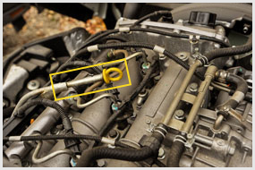
- 58. Mit lehet a képen látható módon ellenőrizni? #703173
- A motorolajszintet.
- A hűtőfolyadék szintjét.
- Az ablakmosófolyadék szintjét.
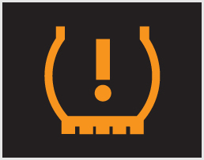
- 59. Mire figyelmeztet a gépjármű műszerfalán világító, az ábrán látható visszajelző lámpa? #703174
- A jelentősen lecsökkent gumiabroncsnyomásra.
- A felmelegedett gumiabroncsra.
- A túl magas gumiabroncsnyomásra.
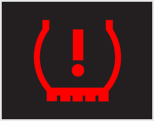
- 60. Meg kell-e azonnal állnia a gépjárművel, ha az ábrán látható ellenőrző lámpa világít a gépjármű műszerfalán? #703175
- Igen, mivel a gumiabroncs levegőnyomásának csökkenése kritikus mértéket öltött.
- Nem, de a következő tervezett megállás alkalmával ellenőrizni kell a gumiabroncsok nyomását.
- Nem, de a járművezetőnek ellenőriztetnie kell a gumiabroncsok állapotát a következő szerviz alkalmával.
- 61. Lehet-e a gépjármű kormányának holtjátéka? #703176
- Igen, de csak a gyártó által meghatározott mértékű.
- Nem, a kormány legkisebb mértékű holtjátéka is balesetveszélyes.
- Igen, hosszabb használat után gyakran előfordul, azonban a kormány nagyobb holtjátéka sem jelent veszélyt a biztonságra.
- 62. Hogyan szabad vontatni azt a járművet, amelynek fékberendezése meghibásodott? #714422
- Csak merev vontatórúdon.
- Vontatókötéllel vagy vontatórúdon.
- Csak trélerrel.
- 63. Csörlő használata esetén... #714423
- nem szabad a mentést végrehajtó gépjármű és a csörlővel húzott jármű között tartózkodni.
- a mentést végrehajtó gépjármű és a csörlővel húzott jármű között csak a gépjárművezető tartózkodhat.
- a mentést végrehajtó gépjármű és a csörlővel húzott jármű között csak a csörlőkezelő tartózkodhat.
- 64. Mi a teendő a gumiabroncs meggyulladása esetén, ha nincs megfelelő oltási lehetőség? #720959
- Csökkentett sebességgel továbbhalad, kis kormánymozdulatokat végez mindaddig, amíg az égő abroncs le nem esik a kerékpántról.
- Azonnal megáll, és a jármű tűzoltó készülékével eloltja az abroncstüzet.
- Növeli a jármű sebességét, hogy a menetszél eloltsa az abroncstüzet.
Elsősegélynyújtó felszerelés (1 db., 1 pont)
- 65. Milyen típusú elsősegélynyújtó felszerelést kell tartani tehergépjárművön, mezőgazdasági vontatón és lassú járművön? #702999
- 'B' típusú elsősegélynyújtó felszerelést.
- 'A' típusú elsősegélynyújtó felszerelést.
- 'C' típusú elsősegélynyújtó felszerelést.
- Nem a típusa számít, hanem hogy bontatlan legyen.
- Nem a típusa számít, hanem hogy a tartalma teljes legyen.
- 66. Szabályos-e olyan elsősegélydobozt tartani a járműben, amelynek nem teljes a tartalma? #703151
- Nem, a hiányt mindig pótolni kell.
- Igen, ha a legfontosabb eszközök és felszerelések benne vannak.
- Nem, mert csak bontatlan elsősegélydobozt szabad a járműben tartani.
- Igen, amennyiben az elsősegélydoboz típusa megfelel a jogszabályi követelményeknek.
- 67. Szabályos-e megbontott elsősegélydobozt tartani a járműben? #703152
- Igen, amennyiben tartalma a jogszabályi előírások szerint teljes, és nem tartalmaz lejárt szavatossági idejű eszközöket, szereket.
- Igen, amennyiben tartalma a jogszabályi előírások szerint teljes.
- Nem, mert csak bontatlan elsősegélydobozt szabad a járműben tartani.
- Igen, ha a legfontosabb eszközök és felszerelések benne vannak.
- 68. Az elsősegélydoboz mely elemeit kell pótolni, cserélni? #703153
- Amelyek a tartalmi követelmények szerint hiányoznak, vagy szavatossági idejük lejárt.
- Amelyek a tartalmi követelmények szerint hiányoznak.
- Az elsősegélydoboz hiányzó elemeit nem szabad pótolni, hiány esetén az egész dobozt cserélni kell.
- 69. Miért érdemes az elsősegélydobozt a gyárilag kialakított helyén tartani? #703154
- Mert szükség esetén így biztosított a gyors hozzáférés.
- Mert közúti ellenőrzéskor ezt is ellenőrzik.
- Nem ott kell tartani, a pótkerék alatt biztonságosabb helyen van.
- 70. Balesethez érkezve köteles-e a járművezető a járművön készenlétben tartott elsősegélynyújtó felszerelést használni, vagy a segítségnyújtó rendelkezésére bocsátani? #703155
- Igen, még akkor is, ha nem érintett a balesetben.
- Nem, mivel akkor a felszerelés hiányos lesz.
- A 2014 elején életbe lépett jogszabálymódosítás óta nem.
- Igen, ha a balesetben az ő járműve is érintett.
- 71. Hol és hogyan kell tárolni a gépjárművön az elsősegélynyújtó felszerelést? #703156
- Portól és víztől védett csomagolásban a járművezető számára jól hozzáférhető helyen.
- A pótkerék alatt vagy a raktérben.
- Portól és víztől védett csomagolásban a pótkerék alatt vagy a raktérben.
- Portól és víztől védett csomagolásban bárhol a gépjárműben.
- 72. Felelősségre vonható-e a járművezető, ha balesethez érkezve nem bocsátja rendelkezésre a gépjárműben tartott elsősegélynyújtó felszerelést? #703157
- Igen.
- Nem, mivel az elsősegélynyújtó felszerelést ilyen esetben sem kötelező rendelkezésre bocsátani.
- Nem, ha a gépjárműben nincs elsősegélynyújtó felszerelés.
- Igen, ha a balesetben az ő járműve is érintett.
- 73. Meddig alkalmazhatóak az elsősegélynyújtó felszerelés tartalmi elemei? #714505
- A gyártó által meghatározott időpontig.
- A gyártó által meghatározott időponttól számított egy évig.
- Amíg el nem fogynak.
- Az elsősegélynyújtó felszerelés teljes kiürüléséig.
- 74. Helyettesíthető-e a járműben a vonatkozó jogszabályban előírt elsősegélynyújtó felszerelés más típusú elsősegélynyújtó felszereléssel? #714506
- Igen, amennyiben az az Európai Gazdasági Térségből származó megállapodás szerinti, és tartalmaz magyar nyelvű vagy ábrás elsősegélynyújtási tájékoztatót.
- Igen, amennyiben a jogszabályban előírt tartalmi elemek minimum 90 százaléka megtalálható benne.
- Igen, amennyiben a tartalmi elemek szavatossága megfelelő.
- 75. Mikor célszerű ellenőrizni az elsősegélydoboz maradéktalan meglétét? #720916
- A telephelyről való elindulás előtt mindig.
- Legfeljebb havonta egyszer, de minimum évente.
- A gépjármű üzembe helyezésekor, valamint a műszaki vizsgára való felkészítésekor.
- Havonta egyszer kötelezően.
- Évente egyszer kötelezően.
Egészségmegóvás, egészségre ártalmas anyagok (1 db., 1 pont)
- 76. Mi a teendő, ha az akkumulátorból folyadék (elektrolit) kerül a bőrére? #702992
- Bő vízzel azonnal le kell mosni.
- Steril kendővel fel kell itatni.
- Késedelem nélkül orvoshoz kell fordulni.
- Zsíros, olajos krémmel azonnal be kell kenni.
- 77. Szabad-e az akkumulátort zárt, szellőzés nélküli helyiségben tölteni? #703017
- Hagyományos, folyékony elektrolittal töltött akkumulátort nem, mert a keletkező gáz ártalmas az egészségre.
- Igen, ha a helyiségben nincs fagyveszély.
- Igen, ha a töltőberendezés bevizsgált, és engedélyezték zárt térben való használatra.
- Nem, semmilyen akkumulátort sem szabad szellőzés nélküli helyiségben tölteni.
- 78. Tájékoztatnia kell-e gyógyszert felíró orvosát arról, hogy rendszeresen gépjárművet vezet? #703097
- Igen, mivel az erős gyógyszerek befolyásolhatják a járművezetői képességet.
- Nem, mert a betegnek kell mérlegelnie és felmérnie a gyógyszer vezetésre gyakorolt hatásait.
- Nem, mert először ki kell próbálnia, hogyan hat a gyógyszer a járművezetési képességére.
- 79. Mikor kell használnia a munkáltató által biztosított védőeszközöket? #703177
- Minden olyan esetben, amikor a munkáltató a munka természeténél fogva ezt előírja.
- Amikor véleménye szerint az egészségét veszélyeztető tevékenységet végez.
- Ha a védőeszközök megfelelő állapotban vannak, ellenkező esetben nélkülük kell a tevékenységeket végezni.
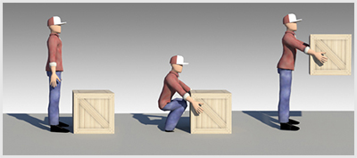
- 80. Helyes-e az ábrán látható emelési mód? #703178
- Igen, mert a térdet behajlítva kell végrehajtani az emelést a gerincsérülések elkerülésének érdekében.
- Nem, mert derékból hajolva kell végrehajtani az emelést a gerincsérülések elkerülésének érdekében.
- Nem, mert ha a hát egyenes, a derék könnyen meghúzódhat.
- Nem, mert ez a mód túlzottan terheli a lábat.
- Nem, mert az ilyen fajta rakományt a földön csúsztatva vagy görgetve kell mozgatni.
- 81. Mi a teendő, ha egy felforrósodott járműalkatrész kisebb felületi égést okoz a kézfején? #703179
- Rögtön folyó víz alá kell tartani a kézfejét.
- Rögtön be kell kötözni a kézfejét.
- Szappanos vízzel alaposan le kell mosni a kézfejét.
- Zsíros, olajos krémmel azonnal be kell kenni a kézfejét.
- 82. Hogyan előzheti meg, hogy a vezetőfülkébe való be- és kiszálláskor lába megsérüljön? #714360
- Zárt cipő viselésével.
- Vastag talpú munkavédelmi bakancs viselésével.
- Gyors be- és kiszállással.
- Kapaszkodással.
- 83. Hogyan kell a nehezebb egységrakomány-darabokat emberi erővel felemelni annak érdekében, hogy a sérülés esélye a legkisebb legyen? #714361
- Az áru mellé kell guggolni, és azt lehetőleg egyenes derékkal kell a térdet kiegyenesítve felemelni.
- Egy kézzel, derékból lehajolva.
- Két kézzel, derékból lehajolva.
- Az erősebb kézzel, míg a másik kezet a derékon kell megtámasztani.
- Mindkét kézzel mindenképpen védőkesztyű nélkül a biztosabb fogás érdekében.
- 84. Helyes-e az ábrán látható emelési mód? #714362
- Igen, mert ez a mód a legkevésbé terheli a gerincet.
- Nem, mert ez a mód túlzottan terheli a lábat.
- Nem, mert az ilyen fajta rakományt a földön csúsztatva vagy görgetve kell mozgatni.
- Nem, mert derékból hajolva kell végrehajtani az emelést a gerincsérülések elkerülése érdekében.
- Nem, mert ha a hát egyenes, a derék könnyen meghúzódhat.
- 85. Hogyan kell a nehezebb egységrakomány-darabokat emberi erővel felemelni annak érdekében, hogy a sérülés esélye a legkisebb legyen? #720896
- A munkáltató által biztosított védőkesztyűben.
- Két kézzel, derékból lehajolva.
- Egy kézzel, derékból lehajolva.
- Az erősebb kézzel, míg a másik kezet a derékon kell megtámasztani.
- Mindkét kézzel mindenképpen védőkesztyű nélkül a biztosabb fogás érdekében.
- 86. Hogyan kell a nehezebb egységrakomány-darabokat emberi erővel felemelni annak érdekében, hogy a sérülés esélye a legkisebb legyen? #720897
- Mindig két kézzel, a két kéz közötti súlyokat azonos mértékben megosztva.
- Az erősebb kézzel, míg a másik kezet a derékon kell megtámasztani.
- Mindkét kézzel mindenképpen védőkesztyű nélkül a biztosabb fogás érdekében.
- Egy kézzel, derékból lehajolva.
- Két kézzel, derékból lehajolva.
- 87. Milyen tünetei vannak a kipufogógáz nagy mennyiségű belélegzésének? #720926
- Fejfájás, szédülés, hányinger, eszméletvesztés.
- Részegséghez hasonlító, bódult állapot.
- Verejtékezés, magas pulzusszám, szomjúság.
- Nincsenek tünetei, mert a kipufogógáz nem ártalmas az egészségre.
Elindulás, vezetés feltételei és biztonsága (1 db., 1 pont)
- 88. Részt vehet-e közúti forgalomban, ha tehergépkocsijának tényleges össztömege a megengedett legnagyobb össztömegét meghaladja? #703087
- Nem.
- Ha a túlsúly a megengedett érték 10%-át nem haladja meg, akkor igen, fokozott óvatossággal, lehetőleg kis forgalmú úton és időszakban.
- Igen, a közlekedési hatóság hozzájárulásával, az általa meghatározott útvonalon és a vonatkozó feltételek megtartásával.
- 89. Nem vezethet járművet az, ... #703111
- akit a jármű vezetésétől jogerősen eltiltottak.
- aki folyamatos gyógyszeres kezelés alatt áll.
- aki folyamatos orvosi kezelés alatt áll.
- 90. Bal karja sérülés miatt mozgásképtelenné vált. Vezethet-e járművet ebben az esetben? #703112
- Nem, mert nincs a jármű biztonságos vezetésére képes állapotban.
- Igen, ha a járművezető jobbkezes, és így biztonsággal tudja a járművet irányítani.
- Igen, ha a jármű automata nyomatékváltóval van felszerelve.
- 91. Műszakilag nem megfelelő gépjárművel (fék-, kormány-, világító- és jelzőberendezések hibája, nem megfelelő gumiabroncs vagy rendszámtábla) a telephelyről elindulni... #703138
- tilos!
- csak csökkentett sebességgel szabad.
- csak hatósági engedéllyel szabad.
- 92. Hogyan vontatható az a jármű, amelyiknek a fékberendezése meghibásodott? #703143
- Csak merev vontatórúdon vagy emelve.
- Csak emelve.
- Csak vontatókötéllel.
- Vontatókötéllel vagy emelve.

- 93. A vezetés biztonsága érdekében az alábbi kormányfogások közül melyik a helyes? #703169
- Az 1-es számú.
- A 2-es számú.
- A 3-as számú.
- Bármelyik, amelyik kényelmes a vezető számára.
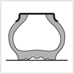
- 94. Mi lehet a következménye, ha a gépjármű gumiabroncsa az ábrán látható módon érintkezik az útfelülettel? #703170
- Korábban használódik el az abroncs.
- Azonnali defekt következik be.
- Semmilyen következménye nincs.
- A gépjármű kanyarstabilitása megnövekszik.
- A gépjármű rugózási paraméterei javulnak.
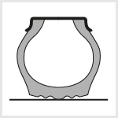
- 95. Mi lehet a következménye, ha a gépjármű gumiabroncsa az ábrán látható módon érintkezik az útfelülettel? #703171
- Megnövekszik a gépjármű oldalkúszási hajlama.
- Azonnali defekt következik be.
- Semmilyen következménye nincs.
- A gépjármű kanyarstabilitása megnövekszik.
- A gépjármű rugózási paraméterei javulnak.
- 96. Hogyan kell az autóbuszt, tehergépkocsit, pótkocsis szerelvényt lejtős úton rögzíteni? #720948
- Rögzítőfékkel és legalább egy kereket ékkel kitámasztva.
- Sebességfokozatba kapcsolva és a rögzítőfék behúzásával.
- Sebességfokozatba kapcsolva és valamennyi kereket ékkel kitámasztva.
- 97. Viselhet-e gyűrűt, karórát, karkötőt járművezetés közben? #720980
- Igen, ha az nem akadályoz a biztonságos vezetésben.
- Nem, mert elvonhatja a figyelmemet.
- Nem, mert vezetés közben sérülést okozhat.
Javítási, karbantartási munkánk (1 db., 1 pont)
- 98. Szabad-e a robbanómotoros jármű motorját zárt helyiségben beindítani, ott hosszabb ideig működtetni? #702981
- Igen, ha a kipufogógáz elvezetése, illetve a helyiség megfelelő szellőztetése megoldott.
- Igen, mert a kipufogógáz nem tartalmaz egészségre ártalmas anyagokat.
- Nem, mert a kipufogógáz berobbanhat.
- 99. Javítási, karbantartási munka csak olyan szerszámokkal végezhető, ... #702984
- amelyek épsége, minősége és mérete az adott feladathoz megfelelő.
- amelyek a járműben is állandóan rendelkezésre állnak.
- amelyeket a szervizállomás évente bevizsgáltat a Hatósággal.
- 100. Mikor szabad a motor zárt rendszerű hűtőkörét megbontani, az utántöltő sapkáját levenni? #702988
- Ha a hűtőfolyadék hőmérséklete +50 Celsius-fok alá csökken.
- Csak akkor, ha a hűtőfolyadék üzemi hőmérsékletű.
- Csak akkor, ha nincs a rendszerben hűtőfolyadék.
- 101. Szabad-e járó motornál az ékszíjon vagy más forgó alkatrészen beállítást végezni? #702990
- Nem, mert balesetveszélyes.
- Igen, de csak hivatásos járművezető végezheti ezt a munkát.
- Csak abban az esetben, ha a hiba másként nem hárítható el.
- 102. Szabad-e megbontani a jármű sűrítettlevegő-rendszerét, ha az nyomás alatt van? #702991
- Nem, mert balesetveszélyes.
- Nem, mert tönkremegy a fékrendszer.
- Igen, mert így lehet nyomásmentesíteni.
- 103. Ha a jármű vagy a pótkocsi emelését végzi, ... #702994
- csak megfelelő teherbírású és rendszeresen ellenőrzött emelőt használhat.
- bármilyen emelőt használhat, ha az a jármű alá stabilan elhelyezhető.
- csak hidraulikus emelőt használhat.
- 104. Az akkumulátor leszerelésekor... #702996
- először a negatív sarut kell levenni.
- először a pozitív sarut kell levenni.
- a saruk levételének sorrendje nem releváns.
- 105. Az akkumulátor felszerelésekor... #702998
- először a pozitív sarut kell felhelyezni.
- először a negatív sarut kell felhelyezni.
- a saruk felszerelésének sorrendje nem releváns.
- 106. Hogyan kell a jármű légfékrendszerében keletkezett jégdugót eltávolítani? #703019
- Forró levegővel, vízzel vagy gőzzel – ami nem okoz tüzet – át kell melegíteni a csőrendszert és szerelvényeit.
- Fáklyával vagy benzinlámpával.
- Lapátra helyezett parázzsal át kell melegíteni a csőrendszert és szerelvényeit.
- A motor folyamatos, nagy fordulatszámon történő járatásával.
- 107. Végezhető-e az ékszíjak vagy egyéb forgó alkatrészek közelében karbantartási tevékenység, ha a gépkocsi motorja jár? #703089
- Nem, mert az balesetveszélyes.
- Csak a szakirányú végzettséggel rendelkező szerelő végezhet karbantartást.
- Igen, de csak fokozott óvatossággal és kellő körültekintéssel.
- 108. Milyen sorrendben kell az akkumulátor kábeleit bekötni, pl. akkumulátorcsere után? #714398
- Először a pozitív, majd a negatív sarut kell felhelyezni.
- Először a negatív, majd a pozitív sarut kell felhelyezni.
- A két sarut egyszerre kell az akkumulátorra csatlakoztatni.
- Ha a jármű áramtalanítva van, tetszőleges sorrendben helyezhetjük fel a sarukat.
- 109. Milyen sorrendben kell az akkumulátor kábeleit lekötni, pl. akkumulátorcsere alkalmával? #714399
- Először a negatív, majd a pozitív sarut kell eltávolítani.
- Először a pozitív, majd a negatív sarut kell eltávolítani.
- A két sarut egyszerre, gyors mozdulattal kell eltávolítani.
- Ha a jármű áramtalanítva van, tetszőleges sorrendben távolíthatjuk el a sarukat.
- 110. Miért fontos – pl. akkumulátorcserénél – az akkumulátorsaruk eltávolításának/felszerelésének sorrendje? #714400
- Rövidzárlatot és ebből adódó baleseteket, károkat előzhetünk meg vele.
- Hogy megfeleljünk a hatósági előírásoknak.
- Mert ezzel meghosszabbítható az akkumulátor élettartama.
- A generátor áramköreinek védelme miatt.
- 111. Ha a javítási feladat végrehajtása során olyan hibák keletkeznek, amelyek a munkavégzés biztonságát veszélyeztetik... #714402
- a veszélyforrás megszüntetéséig a munkavégzést fel kell függeszteni.
- csak fokozott óvatossággal és kellő körültekintéssel szabad folytatni a munkát.
- csak a munkabiztonsági szakértő engedélyével folytatható a munka.
- 112. A motor járatása közben... #714403
- szíjfeszítőket állítani vagy forgó elemek környezetében bármilyen szerelési műveletet végezni tilos.
- hűtőfolyadékot utántölteni szabad.
- ablakmosó folyadékot utántölteni tilos.
- 113. Milyen feltételekkel végezhető a járművön hegesztés? #720924
- A biztonsági feltételek megléte és az előírások betartása esetén az előzetes írásbeli engedélyben meghatározottak szerint végezhető hegesztés.
- Nincsenek külön feltételek.
- Hegesztés csak hegesztőműhelyben végezhető.
- 114. Hogyan szabad a járművet vagy a pótkocsit megemelni az emelőjével? #720949
- Elgurulás elleni rögzítés és a kiékelés után, és csak az emelési pont(ok)on.
- A rögzítés után bármely kívánt ponton megemelhető.
- Az emelőt a súlypontban kell elhelyezni, hogy az egyensúly emelés közben is megmaradjon.
- 115. A kerekein álló gépjárművet a javítóműveletek megkezdése előtt... #720981
- rögzítőfékkel, vagy hatástalan rögzítőfék esetén kerékkitámasztó ékkel kell elmozdulás ellen biztosítani.
- az elmozdulásmentes alátámasztás érdekében alá kell bakolni.
- kerékkitámasztó ékkel kell rögzíteni.
Segédkező személy bevonása (1 db., 1 pont)
- 116. Hogyan végezhet járművével hátramenetet nagy forgalmú úton, telephelyen? #702986
- Tolatást biztosító személy igénybevételével.
- Visszapillantó tükrök segítségével, ha a látási viszonyok megfelelőek.
- Körültekintően, maximum 2 km/h sebességgel.
- 117. Járműszerelvény összekapcsolásakor, hátramenet közben a tolatást biztosító személy... #702987
- a vonó jármű és a pótkocsi között nem tartózkodhat, mert balesetveszélyes.
- a vonó jármű mögött tartózkodik, és a vonófej csapját tartja.
- a vonó jármű mögött tartózkodik, és a pótkocsi csatlakoztatását végzi.
- 118. Hátramenetet olyan gépjárművel, amelyből kiképzési módja következtében a kilátás hátrafelé korlátozott, ... #703110
- csak irányító személy közreműködésével szabad végezni.
- csak fokozott óvatossággal és kellő körültekintéssel szabad végezni.
- csak tolatóradar alkalmazásával szabad végezni.
- 119. Tolatáskor a járművezetőnek... #703142
- mindig látnia kell az irányító személyt.
- lehetőség szerint látnia kell az irányító személyt.
- minden esetben elegendő a visszapillantó tükrök használata.
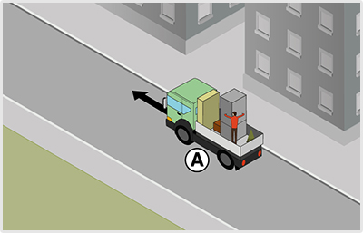
- 120. Helyes-e a segítő személy magatartása a képen? #703160
- Nem, semmilyen esetben sem.
- Nem, mert a bútorok nincsenek hevederrel rögzítve.
- Igen, ha a gépjármű nem főútvonalon és maximum 10 km/h sebességgel közlekedik.
- Igen, ha a gépjármű maximum 20 km/h sebességgel közlekedik.
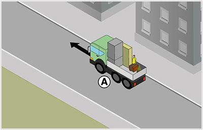
- 121. Milyen sebességgel közlekedhet a szállítójármű az ábrán látható esetben? #703161
- A szállítójármű egyáltalán nem közlekedhet az ábrázolt módon.
- Maximum 20 km/h sebességgel.
- Maximum 10 km/h sebességgel.
- Lakott területen maximum 10, lakott területen kívül maximum 20 km/h sebességgel.
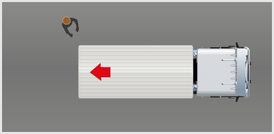
- 122. Helyes-e a tolatást segítő személy teherautóhoz viszonyított helyzete az ábrán? #703162
- Igen, mivel a tolatást segítő személy nem tartózkodhat a jármű holtterében.
- Nem, mivel a tolatást segítő személynek a jármű mögött kell állnia, hogy pontosan fel tudja mérni az esetleges akadály és a jármű közötti távolságot.
- Nem, mert a tolatást segítő személynek a jármű jobb oldalán kell állnia, hogy jobban lássa őt a tolatást végző személy.
- Nem, mert a tolatást segítő személynek a jármű jobb oldalán kell állnia, hogy korábban észrevegye az esetleges akadályokat.
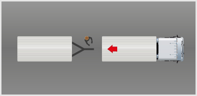
- 123. Helyes-e az összekapcsolást segítő személy teherautóhoz viszonyított helyzete az ábrán? #703165
- Nem, mivel az összekapcsolást segítő személy nem tartózkodhat a jármű holtterében, a két járműrész között.
- Igen, mivel az összekapcsolást segítő személynek a jármű mögött kell állnia, hogy pontosan fel tudja mérni a pótkocsi és a jármű közötti távolságot.
- Nem, mert az összekapcsolást segítő személynek a jármű jobb oldalán kell állnia, hogy az összekapcsolást hatékonyan tudja segíteni.
- Nem, mert a tolatást segítő személynek a jármű jobb oldalán kell állnia, hogy az összekapcsolást irányító jelzéseit a vezető jobban lássa.
- 124. Hol tartózkodhat a tolatást biztosító személy a vonó jármű és a pótkocsi összekapcsolása alatt, amíg a vonó jármű hátramenetet végez? #714457
- A tágabb oldalon, a távolságot és az irányt jelezve a járművezetőnek.
- A pótkocsi és a vonó jármű között, a pótkocsi szerelvényeit tartva.
- A pótkocsi mögött, ügyelve arra, hogy ha a vonó jármű meglökné a pótkocsit, senki ne sérüljön meg.
- 125. Teherautóval élőállat-szállító utánfutót vontat. A segítő személy hogyan vehet részt a szerelvény összekapcsolásában? #714458
- A vonójármű tolatása közben a jármű mellett állva irányítja a jármű vezetőjét.
- A vonófejet megemelve irányítja a tolatást végző jármű vezetőjét.
- Ilyen műveletnél nincs szükség segítő személyre.
- 126. Ha tolatáskor a járművezető nem látja az irányító személyt,... #714459
- a járművet azonnal meg kell állítania.
- a visszapillantó tükrök segítségével kell tájékozódnia.
- a jármű tolatási sebességét csökkentenie kell.
- akkor az éppen a pótkocsi csatlakoztatását végzi.
- 127. Milyen esetben helyes a segítő személy magatartása a képen látható módon? #714460
- Semmilyen esetben sem.
- Amennyiben a szállítandó tárgy rögzítése máshogy nem megoldható.
- Amennyiben a gépjármű maximum 20 km/h sebességgel közlekedik.
- Amennyiben a gépjármű nem főútvonalon közlekedik.
- 128. Helyes-e a segítő személy magatartása a képen? #714461
- Nem, semmilyen esetben sem.
- Nem, mert a bútorok nincsenek hevederrel rögzítve.
- Igen, ha a gépjármű maximum 20 km/h sebességgel közlekedik.
- Igen, ha a gépjármű nem főútvonalon és maximum 10 km/h sebességgel közlekedik.
- 129. Milyen sebességgel közlekedhet a szállítójármű a képen látható esetben? #720919
- Semmilyennel, mert ez tilos.
- Maximum 20 km/h sebességgel.
- Maximum 10 km/h sebességgel.
- Lakott területen maximum 10, lakott területen kívül maximum 20 km/h sebességgel.
- 130. A gépjármű pótkocsival, illetve a vontatandó gépjárművel történő összekapcsolásához ... #720976
- legalább két személy szükséges, ahol az egyiknek az irányítást, a másiknak a tényleges összekapcsolást kell végeznie.
- a vonóberendezésen kívül biztosítólánc alkalmazása is kötelező.
- nem szükséges segítő személy.
Tűzvédelmi szabályok és tűzesetek kezelése (1 db., 1 pont)
- 131. Az éghető folyadékot és gázt szállító gépjármű... #703003
- csak az erre a célra létesített külön gépjárműtároló helyiségben vagy tárolóhelyen, más gépjárművektől elkülönítve helyezhető el.
- bármilyen zárt tárolóhelyen elhelyezhető, ha el van különítve más járművektől.
- csak az erre a célra létesített külön gépjárműtároló helyiségben helyezhető el, de elkülönítése más gépjárművektől nem szükséges.
- 132. A 3500 és 12000 kg közötti megengedett legnagyobb össztömegű tehergépkocsin, mezőgazdasági vontatón és lassú járművön készenlétben kell tartani legalább... #703006
- 1 db 6 kg-os, porral oltó, az előírásoknak megfelelő tűzoltó készüléket.
- 2 db 6 kg-os, porral oltó, az előírásoknak megfelelő tűzoltó készüléket.
- 1 db 12 kg-os, porral oltó, az előírásoknak megfelelő tűzoltó készüléket.
- 1 db 3 kg-os, porral oltó, az előírásoknak megfelelő tűzoltó készüléket.
- 133. A 30 fő alatti befogadóképességű autóbuszokon készenlétben kell tartani legalább... #703009
- 1 db 3 kg-os, porral oltó, az előírásoknak megfelelő tűzoltó készüléket.
- 2 db 3 kg-os, porral oltó, az előírásoknak megfelelő tűzoltó készüléket.
- 1 db 6 kg-os, porral oltó, az előírásoknak megfelelő tűzoltó készüléket.
- 1 db 12 kg-os, porral oltó, az előírásoknak megfelelő tűzoltó készüléket.
- 134. A 24000 kg feletti megengedett legnagyobb össztömegű tehergépkocsin, mezőgazdasági vontatón és lassú járművön készenlétben kell tartani legalább... #703010
- 2 db 12 kg-os, porral oltó, előírásoknak megfelelő tűzoltó készüléket.
- 1 db 12 kg-os, porral oltó, előírásoknak megfelelő tűzoltó készüléket.
- 1 db 6 kg-os, porral oltó, előírásoknak megfelelő tűzoltó készüléket.
- 2 db 6 kg-os, porral oltó, előírásoknak megfelelő tűzoltó készüléket.
- 135. A 12000 és 24000 kg közötti megengedett legnagyobb össztömegű tehergépkocsin, mezőgazdasági vontatón és lassú járművön készenlétben kell tartani legalább... #703011
- 1 db 12 kg-os, porral oltó, előírásoknak megfelelő tűzoltó készüléket.
- 1 db 6 kg-os, porral oltó, előírásoknak megfelelő tűzoltó készüléket.
- 2 db 6 kg-os, porral oltó, előírásoknak megfelelő tűzoltó készüléket.
- 2 db 3 kg-os, porral oltó, előírásoknak megfelelő tűzoltó készüléket.
- 136. Milyen tűzvédelmi előírások vonatkoznak az üzemanyagtöltő állomásokra? #703018
- Nyílt lángot használni és dohányozni tilos, tankolás előtt a jármű motorját le kell állítani.
- Nyílt lángot használni és dohányozni tilos, a jármű motorja azonban tankolás közben alapjáraton működhet.
- Nyílt lángot használni és dohányozni csak a zárt vezetőfülkében szabad.
- 137. A járó motorú jármű üzemanyagtartályába... #703093
- üzemanyagot tölteni tilos.
- zárt térben üzemanyagot tölteni tilos.
- csak üzemanyagtöltő állomáson tilos üzemanyagot tölteni.
- 138. Ki felelős a járműre vonatkozó tűzvédelmi szabályok betartásáért? #714485
- Az üzemben tartó és a gépkocsivezető együttesen.
- Csak a gépkocsivezető.
- A telephely tulajdonosa.
- A telephely szerint illetékes közlekedési hatóság.
- 139. Kinek kell ellátni a jármű tűzvédelmi feladatait a jármű üzeme közben? #714486
- A gépkocsivezetőnek.
- A jármű üzemben tartójának.
- A jármű telephelye szerint illetékes önkormányzat tűzvédelmi szakelőadójának.
- 140. Hogyan kell a porral oltó tűzoltó készüléket a járművön készenlétben tartani? #714488
- Függőlegesen vagy a függőlegestől legfeljebb 15 fokos szöggel eltérő helyzetben.
- Vízszintesen.
- 45 fokos szögben.
- Fektetve, a menetirányra merőlegesen.
- 141. Köteles-e a tűzesetet vagy tűzveszélyt haladéktalanul jelenteni a tűzoltóságnak? #714489
- Igen.
- Csak a tűzeseteket.
- Csak az oltás megkezdését követően.
- Nem, kivéve, ha közvetlen életveszély is fennáll.
- 142. Milyen tűzveszélyességi osztályba tartozó területeken tilos a dohányzás? #714490
- Az 'A’, ’B’ és ’C’ tűzveszélyességi osztályba tartozó területen.
- A 'B’ és ’C’ tűzveszélyességi osztályba tartozó területen.
- Az 'A’ és ’C’ tűzveszélyességi osztályba tartozó területen.
- 143. A jármű utasterében, csomagterében elhelyezett edénybe... #714493
- üzemanyag töltése tilos.
- üzemanyagot csak akkor tölthetünk, ha az edény fémből készült.
- járó motor esetén üzemanyagot tölteni tilos.
- 144. Köteles-e járművezetőként egy másik jármű oltásában segédkezni, ha Ön egy ilyen tűzesethez érkezik? #720956
- Igen.
- Igen, amennyiben a másik jármű gátolja őt a továbbhaladásában.
- Nem, kivéve, ha emberélet is veszélybe került.
- Nem.
- 145. Az éghető folyadékot és gázt szállító gépjármű kijelölt tárolóhelyen történő tárolása esetén... #721008
- a jármű villamos berendezését feszültség-mentesíteni kell.
- az indítókulcsot a jármű vezetőfülkéjében, jól látható helyen kell tartani.
- a járművön elhelyezett tűzoltó készüléket a jármű mellett, könnyen megközelíthető helyen kell elhelyezni.
- 146. A munkahelyen az elhasználódott tisztítóanyagot, gyúlékony hulladékot... #721010
- lezárható, nem éghető tartályokban kell gyűjteni. A tartályokon jelölni kell tartalmukat.
- erre kijelölt helyen kell gyűjteni.
- lehetőség szerint el kell égetni.
- 147. Gépjárműjavító műhelyben... #721011
- az elhasználódott üzemanyagokat (kenőolajok, szűrők stb.) egymástól elkülönítve kell tárolni.
- az elhasználódott üzemanyagokat (kenőolajok, szűrők stb.) az egyéb tűzveszélyes anyagokkal együtt, erre kijelölt helyen kell tárolni.
- tűzveszélyes anyag nem tárolható.
Tűzoltó készülékek (1 db., 1 pont)
- 148. Mikor tekinthető megfelelőnek a jármű tűzoltó készüléke? #703005
- Ha az ellenőrző jegyen az ellenőrzés dátuma, az ellenőr neve olvashatóan fel van tüntetve, az ólomzár és a készülék sértetlen, valamint a nyomásmérő műszer mutatója a zöld tartományba mutat, és a készülék tömege a jármű össztömegéhez igazodik.
- Ha a készülék megfelelő darabszámban rendelkezésre áll.
- Ha a készülék sértetlen, és az ellenőrző jegy érvényes.
- Ha a készülék feltöltött állapotú, és a nyomásmérő műszer mutatója a zöld tartományba mutat.
- 149. Milyen eredetű tűz oltható porral oltó tűzoltó készülékkel? #703012
- Bármilyen.
- Csak elektromos tűz.
- Csak benzintűz.
- Benzintűz kivételével bármilyen.
- 150. A járművön a vonatkozó jogszabály szerint elhelyezett tűzoltó készüléknek... #703095
- állandóan hozzáférhetőnek és felhasználhatónak kell lennie a szállítmány tűzvédelme érdekében.
- maximum a szállítmány kismértékű átrendezésével hozzáférhetőnek és felhasználhatónak kell lennie.
- olyan helyet kell biztosítani, ahonnan az illetéktelenek nem tudják eltávolítani.
- 151. Tűzoltó készülék karbantartását... #703096
- kizárólag a hatóság által nyilvántartásba vett karbantartó szervezet vagy az ilyen karbantartó szervezettel szerződéses jogviszonyban álló felülvizsgáló végezheti.
- a megfelelő szakmai végzettséggel rendelkező személy végezheti.
- a vállalkozás szakmai vezetője által kijelölt személy végezheti.
- 152. A járműszerelvényen porral oltó készüléket tart készenlétben. Tűzoltás esetén indítható-e többször a készülék? #703117
- Igen, amíg töltet van benne.
- Nem, 10-12 mp-ig folyamatosan kell nyomni.
- Igen, bármennyi alkalommal, amíg a tüzet el nem oltja.
- 153. A járművön elhelyezett tűzoltó készülék... #703118
- állandóan hozzáférhető és felhasználható kell, hogy legyen a szállítmány tűzvédelme érdekében.
- csak ABC porral oltó készülék lehet.
- csak legalább 12 kg-os porral oltó készülék lehet.
- 154. Kell-e a járművön kötelezően tartott tűzoltó készüléket rendszeresen ellenőrizni? #714479
- Igen, szakemberrel kell ellenőriztetni.
- Igen, a járművezetőnek kell havonta nyomáspróbát tartania.
- Csak abban az esetben, ha már használták a készüléket tűzoltásra.
- Nem, de ajánlott.
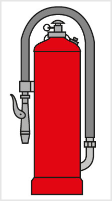
- 155. Hogyan működtethető az ábrán látható – belső palackos – porral oltó tűzoltó készülék? #714480
- A biztosítóvilla kirántása után a beütőgombra rá kell ütni, majd 4-5 másodperc elteltével a porpisztoly elzáró szelepét megnyomva nyit.
- A beütőgomb kihúzása után a porpisztoly megnyitható.
- A porpisztoly nyitása után a palack tetején található gombbal szabályozzuk a kiáramló por mennyiségét.
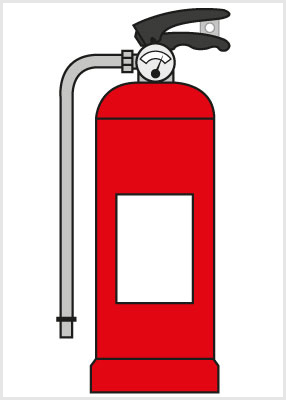
- 156. Hogyan működtethető az ábrán látható – benyomott gázos ’TKF’ – porral oltó tűzoltó készülék? #714481
- A nyomókartámasz kirántása után a lövőkét a tűz irányába tartva a felső működtetőkart ütközésig le kell nyomni.
- A nyomókartámasz kirántása után a lövőkét a tűz irányába tartva az alsó működtetőkart ütközésig fel kell húzni.
- A nyomókartámasz kirántása után a lövőkét a tűz irányába tartva a felső működtetőkarral az oltóanyagot ki kell pumpálni a palackból.
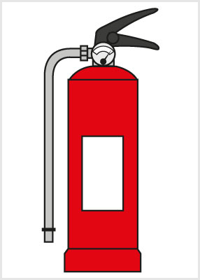
- 157. Hogyan működtethető az ábrán látható, habbal oltó tűzoltó készülék? #714482
- A nyomókartámasz kirántása után a lövőkét a tűz irányába tartva a felső működtetőkart ütközésig le kell nyomni.
- A nyomókartámasz kirántása után a lövőkét a tűz irányába tartva az alsó működtetőkart ütközésig fel kell húzni.
- A nyomókartámasz kirántása után a lövőkét a tűz irányába tartva a felső működtetőkarral az oltóanyagot ki kell pumpálni a palackból.
- 158. Mennyi ideig működtethető egy 12 kg töltetű, porral oltó tűzoltó készülék? #714483
- Kb. 10-12 másodpercig.
- Kb. 30-35 másodpercig.
- Kb. egy percig.
- 159. Köteles-e járművezetőként járművének tűzoltó készülékét egy másik jármű oltásához átadni? #714484
- Igen, köteles vagyok.
- Csak abban az esetben, ha a saját járművem is veszélybe kerülhet.
- Csak abban az esetben, ha a hatóság erre felszólít.
- Nem vagyok köteles.
- 160. Mennyi ideig működtethető egy 6 kg töltetű, porral oltó tűzoltó készülék? #720954
- Kb. 10-12 másodpercig.
- Kb. 30-35 másodpercig.
- Kb. egy percig.
- 161. Hogyan kell működtetni az ábrán látható belső palackos porral oltó tűzoltó készüléket? #720961
- A tömlő végén lévő pisztolyt a tűzre kell irányítani, a biztosítóvillát az ahhoz rögzített karikával ki kell rántani, a beütőgombra rá kell ütni, majd a 4-5 másodperc eltelte után a porpisztolyt meg kell nyomni.
- A beütőgombra rá kell ütni, a biztosítóvillát az ahhoz rögzített karikával ki kell rántani, majd a 4-5 másodperc eltelte után porpisztolyt meg kell nyomni.
- A tömlő végén lévő pisztolyt a tűzre kell irányítani, a beütőgombra rá kell ütni, majd a 4-5 másodperc eltelte után porpisztolyt meg kell nyomni.
- 162. A tehergépkocsin 6 kg-os porral oltó tűzoltó készüléket tart készenlétben. Tűzoltás esetén mennyi ideig tudja folyamatosan üzemeltetni? #720986
- Körülbelül 10-12 másodpercig.
- Körülbelül 30-35 másodpercig.
- Körülbelül 50-60 másodpercig.
- 163. Tehergépkocsiján porral oltó tűzoltó készüléket tart készenlétben. Milyen tüzek oltására használhatja? #720992
- Bármilyen tűz oltására alkalmazható.
- Elektromos tüzek kivételével bármilyen tűzesethez.
- Csak szénhidrogén származékok égése esetén használhatja.
- 164. Az alábbiak közül mely esetben kell alkalmazni az árut szállító járművön készenlétben tartott tűzoltó készüléket? #720995
- Ha a tűzoltó készülékkel saját testi épsége kockáztatása nélkül meg tudja kísérelni a tűz oltását.
- Minden esetben meg kell kísérelni a tűz oltását.
- Csak az áruban keletkezett tűz oltásához.
- 165. Milyen tüzek oltására nem alkalmas az ABC tüzek oltására rendszeresített tűzoltó készülék? #720997
- Fémek tüzeinek oltására.
- Gázok tüzeinek oltására.
- Szilárd, általában szerves eredetű olyan anyagok tüzének oltására, amelyek lángolás, izzás kíséretében égnek.
- 166. Milyen tüzet olthatunk az ABC tüzek oltására rendszeresített tűzoltó készülékkel? #720998
- Folyékony vagy cseppfolyós anyagok tüzeit.
- Bármilyen tűz oltására alkalmas.
- Fémek tüzeit.
- 167. Használhatja-e tűz oltására azt a tűzoltó készüléket, amelyről az a zár (plomba) hiányzik, amely lehetővé teszi annak megállapítását, hogy még nem használták? #720999
- Igen, ha a készülék sérülésmentes, és oltóanyaggal fel van töltve.
- Nem.
- Igen, ha egyéb dokumentummal igazolni tudja, hogy a készüléket még nem használták.
- 168. Porral oltó tűzoltó készülék hatékony használata érdekében... #721000
- a port a tűz zónájába (a lángtérbe) kell jutatni.
- a tűzoltó készüléket folyamatosan a talajon kell tartani.
- a nyomás alatt kiáramló oltóanyag sugarát az égő anyagra kell irányítani.
- 169. Porral oltó tűzoltó készüléket... #721002
- emberi ruházat oltására nem szabad használni, mert a por a tüdőbe jutva súlyos és maradandó egészségkárosodást okozhat.
- elektromos tüzek oltására nem használhatunk.
- a hatékony oltás érdekében csak folyamatosan működtetve célszerű használni.
- 170. Kézi tűzoltó készülékek működtetése során figyelembe kell venni, hogy... #721003
- a por oltóhatását a lángban fejti ki, ezért az oltóanyagot oda kell irányítani.
- több készülék igénybevétele esetén hatékonyabb azokat egymás után használni, mint egyszerre.
- a környezeti hőmérséklet hogyan hat az oltási teljesítményre.
- 171. Hogyan kell működtetni az ábrán látható porral oltó tűzoltó készüléket? #721034
- A nyomókartámaszt ki kell rántani, a lövőkét a tűzre irányítani, majd a felső működtető kart ütközésig lenyomva a tűzoltást megkezdeni.
- A nyomókartámaszt ki kell rántani, a lövőkét a tűzre irányítani, majd az alsó fogantyúkart felhúzva a tűzoltást megkezdeni.
- A lövőkét a tűzre irányítani, az alsó fogantyúkart ütközésig felhúzni, majd a nyomókartámasz kirántását követően a tűzoltást megkezdeni.
- 172. Hogyan kell működtetni az ábrán láthatóhabbal oltó tűzoltó készüléket? #721038
- A biztosítószeget ki kell húzni, a lövőkét a tűzre irányítani, majd a felső működtető kart ütközésig lenyomva a tűzoltást megkezdeni.
- A nyomókartámaszt ki kell rántani, a lövőkét a tűzre irányítani, majd az alsó fogantyúkart felhúzva a tűzoltást megkezdeni.
- A biztosítószeget ki kell húzni, a lövőkét a tűzre irányítani, majd az alsó működtető kart ütközésig felhúzva a tűzoltást megkezdeni.
- 173. A gépjárművön elhelyezett tűzoltó készülék akkor üzemképes, ha... #721043
- fém vagy műanyag plombája, karbantartást igazoló címkéje sértetlen és ép.
- nyomásmérő műszerének jelzése a piros zónában található.
- a kibiztosítást követően a működtető kar könnyen elmozdítható.
Járműtüzek, tűzoltási módok (1 db., 1 pont)
- 174. Oltható-e a benzintűz vízzel? #703014
- Nem.
- Igen.
- Csak desztillált vízzel.
- 175. Mi az oka a legtöbb járműtűznek? #703015
- Elektromos zárlat vagy üzemanyag-szivárgás.
- Túlmelegedett gumiabroncsok.
- Dohányzás.
- Kipufogócső túlmelegedése.
- 176. Mi az első teendő, ha járműve menet közben kigyullad? #703016
- Megáll, ha vannak utasai, biztonságba helyezi őket, majd áramtalanít, és megkísérli a tűz oltását.
- Továbbhajt, növeli a sebességet, hogy a menetszél eloltsa a tüzet.
- Megáll, és értesíti a rendőrséget.
- Megáll, majd megkísérli a tüzet eloltani.
- 177. Milyen hiba okozhat leggyakrabban gumiabroncstüzet a tehergépkocsin? #703094
- Ha az ikerkerekek valamelyike lapos, és a gumik összeérnek.
- Ha a rögzítőfék nincs teljesen kioldva.
- Ha a kerékcsapágy szorul, túlmelegszik.
- 178. A vízzel oltás nem alkalmas... #703109
- elektromos és benzintüzek oltására.
- műhelyekben keletkezett tüzek oltására.
- parázsló tűz oltására.
- 179. A motortérben keletkező tűz esetén csak akkor nyissuk fel a motorháztetőt, ha... #703113
- a kezünkben van a kibiztosított tűzoltó készülék, de ebben az esetben is csak annyira, hogy az oltóanyagot biztosan be tudjuk juttatni a motortérbe.
- a gyújtást lekapcsoltuk, a járművet áramtalanítottuk.
- rendkívül nagy teljesítményű tűzoltó készülék áll rendelkezésünkre a tűz oltásához.
- 180. Mikor köteles a vezető a járművében lévő tűzoltó készüléket egy másik járműben keletkezett tűz oltásához átadni? #703114
- Feltétel nélkül minden esetben.
- Csak akkor, ha a munkáltatója ezt előzetesen engedélyezte.
- Csak akkor, ha a másik jármű vezetője vállalja a tűzoltó készülék újratöltésének költségeit.
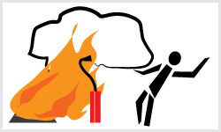
- 181. Helyes-e az ábrán látható tűzoltási mód? #703158
- Nem, mert az oltóanyagot mindig a széllel azonos irányban kell a tűzre juttatni.
- Igen, mert az oltást végző személy távolabb áll a tűz fészkétől, így kisebb a balesetveszély.
- Igen, mert az oltóanyagot mindig a széliránnyal ellentétes irányból kell a tűzre juttatni.
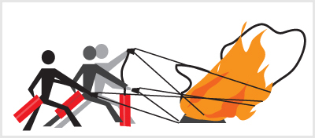
- 182. Helyes-e az ábrán látható tűzoltási mód? #703159
- Igen, mert ha lehetséges, egyszerre több készüléket kell használni az oltáshoz.
- Nem, mert a rendelkezésre álló tűzoltó készülékeket tartalékolni kell arra az esetre, ha a tűz továbbterjedne.
- Nem, mert egy tűzoltó készülék csak pár másodpercig üzemeltethető.
- 183. Milyen oltóanyaggal oltható feszültség alatti elektromos tűz? #714384
- Porral.
- Habbal.
- Halonnal.
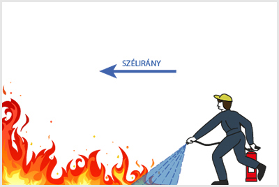
- 184. Helyes-e az ábrán látható tűzoltási mód? #714385
- Igen, mert a szél irányából, elöl és alul kell megkezdeni a tűz oltását.
- Nem, mert a széllel szembeni oldalon kell a tűz oltását végezni.
- Nem, mert a tűz oltását a tűz középpontjától kell kezdeni.
- 185. Mivel oltható az elektromos hálózaton keletkezett tűz? #714386
- Porral oltó tűzoltó készülékkel.
- Habbal oltó tűzoltó készülékkel.
- Vízsugárral.
- Homokkal.
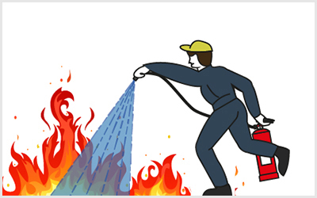
- 186. Helyes-e az ábrán látható tűzoltási mód? #714387
- Nem, mert felületi tüzet tőlünk elhajtva kell oltani.
- Igen, mert a tűzforrás középpontjából kell kezdeni az oltást.
- Nem, mert így az oltást végző túl közel áll a tűzhöz.
- Igen, mert a tűzoltást ott kell kezdeni, ahol a legmagasabbra csapnak fel a lángok.
- 187. Használható-e oltóhab elektromos tüzek oltására? #714388
- Nem, mert az oltóhab vezeti az elektromos áramot, mivel víz alapú.
- Igen, mert az oltóhab szétterül a felületen, és így elzárja az oxigént az égés helyétől.
- Igen, mert az oltóhab nem vezeti az elektromos áramot.
- 188. Menet közben a tehergépkocsin kigyulladt a gumiabroncs. Milyen hiba okozhatta ezt? #714390
- A gumiabroncsban lévő alacsony levegőnyomás, az ikerkerekek egyikének defektje vagy a jármű túlterhelése.
- A tartós lejtmenet, a fékek hibája és a túl magas gumiabroncs-nyomás.
- A gumiabroncsok elöregedése.
- 189. Gumiabroncstűz porral történő oltásánál arra kell számítani, hogy... #714391
- az oltópor a lángolást megszünteti, de – hűtőhatás hiányában – a gumi visszagyulladhat.
- jelentős mennyiségű káros anyag szabadul fel.
- a tűz nagyon könnyen átterjedhet a többi járműre is.
- 190. Általában milyen irányból kell a tűz oltását megkezdeni? #714392
- A széliránnyal megegyező irányból.
- A széliránytól függetlenül bármely irányból.
- A széliránnyal ellenétes irányból.
- 191. Helyes-e a képen látható tűzoltási mód? #714393
- Nem, mert ha lehetséges, egyszerre több készüléket kell használni az oltáshoz.
- Igen, mert a rendelkezésre álló tűzoltó készülékeket tartalékolni kell, ha a tűz tovább terjedne.
- Igen, mert egy tűzoltó készülék csak pár másodpercig üzemeltethető.
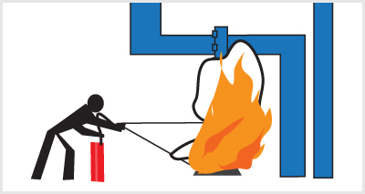
- 192. Helyes-e a képen látható tűzoltási mód? #720917
- Nem, mert a felülről lefelé folyó tüzet a folyás irányába kell oltani.
- Igen, mert a felülről lefelé folyó tüzet a folyás irányával ellentétesen kell oltani.
- Igen, mert így az oltó személy közelebb tudja tartani a készüléket a tűzhöz.
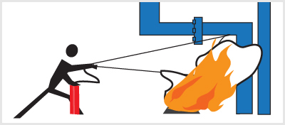
- 193. Helyes-e a képen látható tűzoltási mód? #720918
- Igen, mert a felülről lefelé folyó tüzet a folyás irányába kell oltani.
- Igen, mert így az oltó személy közelebb tudja tartani a készüléket a tűzhöz.
- Nem, mert a felülről lefelé folyó tüzet a folyás irányával ellentétesen kell oltani.
- 194. Mi a teendők helyes sorrendje, ha a jármű kigyullad? #720957
- Utasok mentése, tűz oltása, tűzoltóság értesítése.
- Tűz oltása, utasok mentése, tűzoltóság értesítése.
- Tűzoltóság értesítése, utasok mentése, tűz oltása.
- 195. Célszerű-e gépjárműtüzet vízzel oltani? #720975
- Nem, mert ha folyékony üzemanyag ég, az a tűz továbbterjedését okozhatja.
- Igen, mert jelentősen csökkenti a hőmérsékletet.
- Nem, mert a víz a jármű fémszerkezetének rozsdásodását okozhatja.
- 196. Mit kell tennie, ha egy másik járműben keletkezett tüzet észlel? #720984
- Biztonságos helyen megáll, rendelkezésre bocsátja a járművében lévő tűzoltó készüléket, és részt vesz a tűz oltásában.
- A hivatásos katasztrófavédelmi szerv értesítését követően folytatja útját.
- Csak akkor köteles megállni, ha az ön járművében van tűzoltó készülék.
- 197. Kit kell értesítenie, ha veszélyes anyagot szállító tehergépkocsin tűz üt ki? #720985
- A rendőrhatóságot.
- A hivatásos katasztrófavédelmi szervet.
- A veszélyes anyagot gyártó vállalatot.
- 198. A gépjárművek esetében a tűz kialakulásának leggyakoribb okai... #720987
- az elektromos rendszer vagy a tüzelőanyag-ellátó rendszer hibája.
- emberi mulasztásra vezethetőek vissza.
- konstrukciós hibára vezethetőek vissza.
- 199. A gépkocsik üzemanyagellátó rendszerében keletkezett tüzeknél a legfontosabb... #720994
- a motor leállítása és a gépkocsi áramtalanítása.
- az üzemanyag motortérbe jutásának azonnali megszüntetése.
- a tűz továbbterjedésének megakadályozása.
- 200. Motortérben keletkezett tűz oltásánál mi a helyes eljárási mód a tűz továbbterjedésének csökkentése érdekében? #720996
- Lehetőség szerint a motorháztető felnyitása nélkül kell megkezdeni a tűz oltását.
- Vízzel kell elárasztani a motorteret.
- A motorháztető felnyitását követően azonnal meg kell kezdeni a tűz oltását.
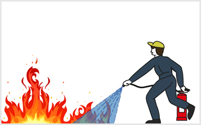
- 201. Helyes-e az ábrán látható tűzoltási mód? #721033
- Igen, mert felületi tüzet tőlünk elhajtva kell oltani.
- Nem, mert a tűzoltást ott kell kezdeni, ahol a legmagasabbra csapnak fel a lángok.
- Nem, mert a tűzforrás középpontjából kell kezdeni az oltást.
Környezetvédelem (1 db., 1 pont)
- 202. Mi a teendője, ha a jármű telephelyén tűzveszélyes anyag folyt szét? #703023
- Azonnal felitatja (pl. homokkal), és a felitatott anyagot az erre a célra kijelölt edényben tárolja.
- Elkeríti, és megvárja, amíg elpárolog.
- Megfelelő szellőzés mellett elpárologtatja az anyagot.
- Értesíti a tűzoltóságot, és kiérkezésükig őrzi a helyszínt.
- 203. Hol kell gyűjteni a telephelyen keletkező tűzveszélyes anyaggal szennyezett hulladékot (pl. olajos, zsíros rongyot, felitatott üzemanyagot stb.)? #703101
- Jól zárható, nem éghető anyagból készült edényben, az erre a célra kijelölt helyen.
- Faládában, amelynek zárható a fedele.
- A közlekedési utat nem elzárva bárhol a telephely területén.
- A hatóság által erre a célra kijelölt helyen.
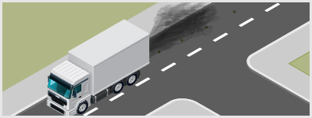
- 204. Szabad-e az ábrán látható módon haladó gépjárművel a közlekedésben részt venni? #703188
- Nem, mert a fekete kipufogógázból feltételezhető, hogy a gépjármű nem felel meg a környezetvédelmi előírásoknak.
- Igen, mivel hirtelen nagy gázadás után normális jelenség a fekete kipufogógáz.
- Igen, ha a gépjármű lakott területen kívül közlekedik.
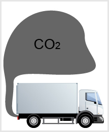
- 205. Milyen hatással van a közlekedési eszközök szén-dioxid-kibocsátása a környezetre? #703189
- Hosszú távon és visszafordíthatatlanul károsítja a környezetet.
- Rövid távon károsítja a környezetet (ami azután gyorsan regenerálódik).
- Csak az épített környezetet károsítja.
- Csak az aszfaltburkolatot károsítja.
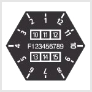
- 206. A gépjármű milyen környezetvédelmi tulajdonságát jelöli az ábrán látható plakett? #703192
- Korszerűtlen, nem környezetbarát jármű.
- Korszerű, környezetbarát jármű.
- Korszerű, kiemelten környezetbarát jármű.
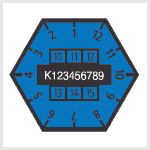
- 207. A gépjármű milyen környezetvédelmi tulajdonságát jelöli az ábrán látható plakett? #703193
- Korszerű, környezetbarát jármű.
- Korszerű, kiemelten környezetbarát jármű.
- Korszerűtlen, nem környezetbarát jármű.
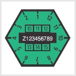
- 208. A gépjármű milyen környezetvédelmi tulajdonságát jelöli az ábrán látható plakett? #703194
- Korszerű, kiemelten környezetbarát jármű.
- Korszerű, környezetbarát jármű.
- Korszerűtlen, nem környezetbarát jármű.
- 209. Van-e valamilyen káros hatása annak, ha a gépjármű üzemeltetéséhez használt hajtó- és kenőanyagok valamelyike a talajba szivárog? #714413
- Igen, mert az ilyen anyagok jelentős mértékben veszélyeztetik az élővilágot.
- Nincs, mert ilyen anyagok rövid időn belül elbomlanak.
- Csak abban az esetben, ha jelentős mennyiség szivárog a talajba.
- 210. Hogyan kell tárolni a jármű üzemben tartásakor keletkezett elhasználódott anyagokat? #714414
- Mindig egymástól elkülönítve, az azok természetéhez igazodó tárolóedényben és helyen.
- Az elhasználódott anyagok nem tárolhatóak, ki kell azokat önteni.
- Az erre rendszeresített tárolóedényben, azokat összeöntve.
- 211. Hogyan lehet a környezetre ártalmas használt motorolajat, motorolajos flakonokat, motorolajjal érintkező rongyokat, olajszűrőt biztonságosan kezelni? #714415
- Az erre rendszeresített és folyamatosan ürített tárolóhelyen vagy azokon az üzemanyagtöltő állomásokon kell leadni azokat, amelyek átveszik.
- A veszély csökkentése érdekében vízzel kell felhígítani.
- Homok alá kell temetni, vagy a szelektív hulladékgyűjtő konténerbe kell kidobni.
- 212. Hogyan befolyásolja a környezetet a gépjármű megengedettnél nagyobb olajfogyasztása? #714416
- Járulékosan szennyezi a környezetet.
- Nem befolyásolja a környezetet.
- Kisebb lesz a károsanyag-kibocsátás, ezért kíméli a környezetet.
- 213. Mit kell tenni az elhasználódott gumiabroncsokkal? #714417
- A kijelölt átvevőhelyeken le kell adni, vagy a telephelyen kijelölt tárolóhelyre kell vinni.
- A háztartási hulladékok közé tehetőek, vagy fűtésre használhatóak.
- Az építési hulladékokkal együtt, konténerben a szeméttelepre kell azokat szállíttatni.
- 214. Veszélyes hulladéknak számítanak-e az elhasználódott gumiabroncsok? #714418
- Igen.
- Nem.
- Csak a 10 évnél korábban gyártottak.
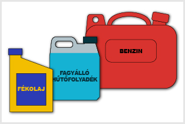
- 215. Szabad-e a képen látható folyadékokat az élővizekbe juttatni? #714419
- Nem, semmilyen esetben sem.
- Nem, azokat a talajba kell juttatni.
- Bizonyos, rendeletekkel meghatározott esetekben igen.
- 216. Szabad-e az elhasznált gumiabroncsokat másodlagosan, fűtési vagy dekorációs célra használni? #720904
- Nem, mert azok veszélyes hulladéknak számítanak.
- Igen, mert ezzel csökkenthető a hulladék mennyisége.
- Fűtésre nem, de dekorációs célra használhatóak.
- 217. Szabad-e a képen látható folyadékokat a talajba juttatni? #720905
- Nem, semmilyen esetben sem.
- Igen, amennyiben az nem élővizek közelében történik.
- Bizonyos, rendeletekkel meghatározott esetekben igen.
- 218. A talajra kifolyt tűzveszélyes folyadékot... #721009
- veszélymentesíteni kell (pl. homokkal felitatni).
- a veszély csökkentése érdekében vízzel kell felhígítani.
- a csúszásveszély megakadályozása érdekében homokkal le kell takarni.
- elpárolgásáig körül kell keríteni.
- 219. Részt vehet-e a közúti forgalomban, ha a tehergépkocsija kipufogófüstjének koromtartalma túllépi a vonatkozó rendeletben megengedett mértéket? #721032
- Nem, mert az a környezetet a megengedettnél jobban szennyezi.
- Igen, ha a szennyezés mértéke a rendeletben megengedett értéket maximum 10%-kal lépi túl.
- Csak akkor, ha a motor továbbra is egyenletesen, kopogásmentesen működik.
- Csak akkor, ha ez még nem zavarja a közlekedés többi résztvevőjét.
Személyszállítás (1 db., 1 pont)
- 220. Bele kell-e a járművezetőt számolni a szállítható személyek számába? #703026
- Igen.
- Nem.
- Csak abban az esetben, ha a jármű maximális terhelésének kiszámításánál a vezető súlyát is számításba vették.
- 221. Szabad-e tehergépkocsin a hatósági engedélyben feltüntetett számú személynél többet szállítani? #703027
- Bizonyos feltételeknek megfelelve igen.
- Igen.
- Nem.
- 222. Szállítható-e személy a mezőgazdasági vontató első, nem billenő rakfelületű pótkocsiján? #703028
- A tehergépkocsira vonatkozó szabályok betartásával igen.
- Nem.
- Igen, minden esetben.
- 223. Szabad-e az ábrán látható tehergépjárművel több személyt szállítani, mint ahány a hatósági engedélyében szerepel? #703202
- Nem, a billenthető rakfelületű tehergépjárművekkel tilos.
- Igen, ha a rakomány a szállított személyeket nem veszélyezteti.
- Igen, ha a tehergépkocsi össztömege – a rakfelületen szállított személyek súlyát személyenként 68 kg-mal számolva – a tehergépkocsi megengedett legnagyobb össztömegét nem haladja meg.
- Igen, ha a szállított személyek számára megfelelően rögzített és biztonságos ülőhely van kialakítva.
- Igen, ha a rakomány biztonsága megkívánja.
- 224. Hogyan kell számításba venni az utasokat a jármű terhelése szempontjából? #703204
- Személyenként 68 kg-os tömeggel.
- Személyenként 78 kg-os tömeggel.
- Személyenként 65 kg-os tömeggel.
- Férfiakat 80, nőket 60, gyermekeket 40 kg-mal kell egységesen számolni.
- Tényeleges testsúlyukat kell figyelembe venni.
- 225. Az ábrán látható utasok hány kilogrammal számítanak bele a jármű terhelésének kiszámításába? #703205
- 136 kg-mal.
- 152 kg-mal.
- Tényeleges testsúlyukat kell összeadni.
- Az utasokat nem kell beleszámítani a jármű terhelésébe.
- 226. Hány személy szállítható a gépkocsi első ülésén? #703206
- Csak egy személy.
- Egy felnőtt vagy két 10 éven aluli gyermek.
- Ha elférnek, akár többen is, nincs meghatározva.
- 227. Hány személyt szabad legfeljebb szállítani gépjárművel, mezőgazdasági vontatóval és lassú járművel? #714467
- A jármű hatósági engedélyében feltüntetett számú személyt.
- Annyit, amennyi személy elfér benne.
- A jármű hatósági engedélyében feltüntetett számú személyt, amelybe a vezetőt nem kell beleszámolni.
- 228. A tehergépkocsi utasülései is biztonsági övvel vannak ellátva. Köteles-e becsatolni a biztonsági övet az árut kísérő rakodó? #714468
- Igen, lakott területen és azon kívül egyaránt.
- Csak ha a gépjárművezető erre kéri.
- Csak lakott területen kívül.
- Igen, ha arra az üzemben tartó kötelezi.
- 229. Szabad-e az ábrán látható módon személyt szállítani? #714469
- Semmilyen esetben sem, mert a rakomány veszélyezteti az utas testi épségét.
- Abban az esetben, ha a tehergépkocsi megengedett legnagyobb össztömege 3500 kg-ot meghaladja.
- Abban az esetben, ha a tehergépkocsi rakfelülete nem billenthető.
- Igen, ha a járműszerelvény sebessége nem haladja meg a 30 km/h sebességet.
- Igen, ha a tehergépkocsi össztömege – a rakfelületen szállított személy súlyát 68 kg-mal számolva – a tehergépkocsi megengedett legnagyobb össztömegét nem haladja meg.
Teherszállítás, rakományra ható erők (1 db., 1 pont)
- 230. Milyen irányba igyekszik elmozdítani a rakományt a tehetetlenségi erő a jármű lassításakor? #703034
- A jármű menetirányába.
- A jármű menetirányával ellentétes irányba.
- A terhelés eloszlásától függően valamelyik oldalirányba.
- 231. Mennyi lehet a megrakott jármű magassága, amelyhez még nem kell útvonalengedély? #703035
- Legfeljebb 4 méter.
- Legfeljebb 3 méter.
- Legfeljebb 5 méter.
- Nincs meghatározva. Arra kell ügyelni, hogy a rakomány sújpontja ne kerüljön 2 méternél magasabbra.
- 232. Mennyire nyúlhat túl hátrafelé a 3 méter hosszú, nyitott rakfelületen elhelyezett rakomány? #703038
- Legfeljebb 1,5 méterre.
- Legfeljebb 40 centiméterre.
- Legfeljebb 3 méterre.
- 233. Mennyire nyúlhat túl a nyitott rakfelületen elhelyezett rakomány előrefelé? #703039
- Legfeljebb a jármű elejéig.
- A jármű elejétől 40 centiméterre.
- Nem nyúlhat túl.
- 234. Mennyire nyúlhat túl a nyitott rakfelületen elhelyezett rakomány oldalirányba? #703040
- Annyira, hogy a jármű és a kinyúló rakomány együttes szélessége a 2,5 métert ne haladja meg.
- Annyira, hogy a jármű és a rakomány együttes szélessége a 2 métert ne haladja meg.
- Mindkét oldalra 40-40 centimétert.
- Csak jobb oldalra, legfeljebb 40 centimétert.
- 235. Szabad-e a zárt kocsiszekrényű jármű tetején rakományt elhelyezni? #703041
- Csak abban az esetben szabad, ha a járműre tetőcsomagtartó van felszerelve.
- Csak akkor, ha a rakomány jól rögzíthető a jármű tetejéhez, és legfeljebb 40 centiméterrel nyúlik túl a járművön.
- Nem, a jármű tetején tilos rakományt szállítani.
- 236. Helyes-e, ha üres gépkocsival megrakott pótkocsit vontat? #703043
- Nem, mert fékezéskor a vonó jármű kerekei könnyen megcsúszhatnak, a szerelvény becsuklik.
- Igen, mert a vonó jármű könnyebben kormányozható.
- Igen, mert a pótkocsi nehezebben csúszik meg.
- 237. Nappal, jó látási viszonyok között hogyan kell megjelölni a járművön túlnyúló rakományt? #703044
- Legalább 40x40 cm méretű piros vagy piros-fehér csíkos zászlóval és táblával.
- Legalább 40x40 cm méretű, sárga színű kendővel.
- Legalább egy darab piros fényvisszaverővel.
- 238. Milyen esetekben hat előrefelé ható hosszirányú erő a gépkocsi rakományára menet közben? #703048
- Fékezéskor, lejtőmenetben, ütközéskor.
- Fékezéskor és emelkedőn haladva.
- Egyenetlen úttesten, bukkanóban.
- 239. Milyen irányba igyekszik elmozdítani a rakományt a tehetetlenségi erő a jármű gyorsításakor? #714470
- A jármű menetirányával ellentétes irányba.
- A jármű menetirányába.
- A terhelés eloszlásától függően valamelyik oldalirányba.
- 240. Meg kell-e jelölni a járművön túlnyúló rakományt? #714471
- Igen, minden esetben.
- Igen, de csak a mozgó járművön kötelező.
- Nem, de ajánlott.
- Igen, de csak éjszaka vagy rossz látási viszonyok között kötelező.
- 241. Mennyire nyúlhat túl a rakomány a jármű nyitott rakfelületéről hátrafelé, ha a rakfelület hossza 6 méter? #714472
- Legfeljebb 2 méterre.
- Legfeljebb 1 méterre.
- Legfeljebb 3 méterre.
- 242. Hogyan határozzák meg a rakomány rögzítéséhez szükséges rögzítőerő nagyságát? #714474
- A rakomány súlyának bizonyos százalékában.
- A rakomány és a rakfelület közötti súrlódóerő bizonyos százalékában.
- A rakomány méreteinek bizonyos százalékában.
- 243. A menet közben fellépő tömegerőkkel szemben a rakomány elmozdulását a rakomány és a rakfelület közötti súrlódási erő... #714475
- gátolja.
- nem gátolja.
- elősegíti.
- 244. Folyadéktartállyal felszerelt pótkocsit vontat. Mire kell számítania hirtelen fékezés esetén? #714478
- A folyadék hosszirányú lengése miatt a járműszerelvény fékezése egyenetlenné válik.
- A folyadék hosszirányú lengése nincs hatással a járműszerelvény stabilitására.
- A folyadék hosszirányú lengése rontja a jármű oldalstabilitását.
- 245. Milyen tömegerők hatnak menet közben a rakományra? #720927
- Függőleges (fel-le), hosszirányú (előre-hátra) és oldalirányú erők.
- Súrlódó- és hosszirányú erők.
- Tapadó- és oldalirányú erők.
- 246. Milyen esetekben hat hátrafelé ható hosszirányú erő a gépkocsi rakományára menet közben? #720928
- Induláskor, emelkedőn haladva, hátulról történő ütközésben.
- Fékezéskor és lejtőmenetben.
- Bukkanóban és egyenetlen úttesten.
- 247. Milyen esetekben hat oldalirányú erő a gépkocsi rakományára menet közben? #720929
- Kanyarmenetben és az úttest oldallejtése esetében.
- Induláskor és emelkedőn haladva.
- Fékezéskor és lejtőn haladva.
- 248. Általában mekkora rögzítőerő szükséges a rakomány biztonságos rögzítéséhez az előre- és felfelé ható tömegerőkkel szemben? #720930
- Legalább a rakomány súlyával megegyező.
- Legalább a rakomány súlyának 50%-ával megegyező.
- Legalább a rakomány súlyának 30%-ával megegyező.
- 249. Általában mekkora rögzítőerő szükséges a rakomány biztonságos rögzítéséhez az oldalirányú és hátrafelé ható tömegerőkkel szemben? #720931
- Legalább a rakomány súlyának 50%-ával megegyező.
- Legalább a rakomány súlyának 30%-ával megegyező.
- Legalább a rakomány súlyával megegyező.
- 250. Függ-e a rakomány rögzítéséhez szükséges erő nagysága a rakomány és a rakfelület közötti súrlódóerőtől? #720932
- Igen, ha nagyobb a súrlódás, akkor kisebb rögzítőerő szükséges.
- Igen, ha nagyobb a súrlódás a rakomány és a rakfelület között, akkor nagyobb rögzítőerő szükséges.
- Nem, a súrlódás nem befolyásolja a szükséges rögzítőerő nagyságát.
- 251. Részben töltött, osztatlan tartályban folyadékot szállít. Mire kell figyelnie ívmenetben? #720974
- A folyadék jelentős mértékű elmozdulása a jármű felborulását idézheti elő.
- A folyadék elmozdulása nem befolyásolja a jármű stabilitását.
- A folyadék elmozdulásának hatására a jármű súlypontja az útpályához közelebb helyezkedik el.
- 252. Gyorsításkor a tehergépkocsin milyen irányba igyekszik elmozdítani a rakományt a tehetetlenségi erő? #721035
- A jármű menetirányával ellentétes irányba.
- A jármű menetirányával megegyező irányba.
- bármely irányba, ha a rakományt nem megfelelően rögzítették
- 253. Egytengelyes pótkocsit vontat. A vonó járművön vagy a pótkocsin elhelyezett rakományra hat nagyobb függőleges (fel-le) irányú erő? #721037
- A vontatott pótkocsin elhelyezett rakományra hat nagyobb függőleges irányú erő.
- A vonójárművön elhelyezett rakományra hat nagyobb függőleges irányú erő.
- Nincs különbség, mert a függőleges (fel-le) irányú erőt csak a pálya egyenetlensége befolyásolja.
Szállító járművek típusai (1 db., 1 pont)
- 254. Túlnyúlhat-e a jármű rakománya a rakfelületen hátrafelé, ha pótkocsit vontat? #703037
- Nem.
- Igen, legfeljebb 40 centimétert.
- Igen, legfeljebb a pótkocsi elejéig.
- 255. A tartányos közúti járművek tekintetében melyik keresztmetszetű felépítmény nyújtja a legnagyobb nyomásállóságot? #703058
- A kör keresztmetszetű.
- A koffer keresztmetszetű.
- Az ellipszis keresztmetszetű.
- 256. Hol olvashatóak a tartányos járművek felépítményére vonatkozó legfontosabb információk? #703059
- A jármű műszaki dokumentációjában és a nyomásálló tartányon elhelyezett adattáblán.
- A jármű menetlevelében.
- A jármű forgalmi engedélyében.
- 257. A jármű gyorsításai, fékezései milyen lengéseket idéznek elő a tartányban lévő szállított folyadék tekintetében? #703060
- Alapvetően hosszirányút.
- Csak hosszirányút.
- Csak oldalirányút.
- 258. Mennyire legyen feltöltve a tartány nagyobb mennyiségű folyadék szállításakor? #703062
- Legkevesebb 80% mértékben.
- Ha van megfelelő mennyiségű szállítandó folyadék, akkor 100% mértékben.
- Legkevesebb 50% mértékben.
- 259. ISO-konténerek szállítása esetén hogyan célszerű a tehergépkocsi rakfelületét kialakítani? #703134
- A rakodófelületen konténerrögzítő szerkezetet kell kialakítani, amelyek alkalmasak az ISO konténerek rögzítési pontjainak fogadására.
- Lehetőség szerint fa burkolattal kell ellátni, hogy a konténer szállítás közben ne csúszhasson meg.
- A konténerek leesésének megakadályozására rakoncákkal kell ellátni.
- 260. Hűtőgépes gépkocsijával gyorsan romló élelmiszert szállít. Milyen kötelezettségei vannak ilyen esetben a gépkocsivezetőnek? #703136
- A szállítás során folyamatosan figyelemmel kell kísérni a rakodótér hőmérsékletének változását.
- A rakodási feladat befejezését követően be kell kapcsolni a hűtőberendezést.
- A hagyományos áruszállításhoz képest külön kötelezettségei nincsenek.
Rakomány elhelyezése (1 db., 1 pont)
- 261. Mi a járművezető teendője az általa vezetett jármű rakodása közben? #703024
- Ellenőriznie kell a rakodást a helytelen rakodás elkerülésének érdekében.
- Az áru minőségének ellenőrzése.
- Az áru csomagolásának ellenőrzése és mennyiségi leltár készítése.
- 262. Hogyan kell a rakományt a járművön elhelyezni és rögzíteni? #703029
- Úgy, hogy ne tudjon elmozdulni, felborulni, leesni vagy elszóródni.
- Úgy, hogy a jármű oldalfalainak terhelését el kell kerülni.
- Lehetőleg az első kerekek terhelése nagyobb, a hátsó kerekeké kisebb legyen.
- 263. Hogyan kell a rakományt a járművön elhelyezni? #703030
- Úgy, hogy valamennyi kereket egyformán terhelje.
- Úgy, hogy az első kerekekre nagyobb terhelés jusson.
- Úgy, hogy a hátsó kerekekre nagyobb terhelés jusson.
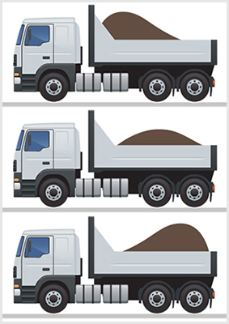
- 264. Az ábrán látható változatok közül melyik billenőplatós tehergépkocsin helyezték el helyesen a rakományt? #703046
- A középső ábrán láthatón, mert a rakomány a tengelyeket egyformán terheli.
- Az alsó ábrán láthatón, mert a plató könnyebben billenthető.
- A felső ábrán láthatón, mert a rakomány az első tengelyt jobban terheli.
- 265. Akadályozhatja-e a rakomány a jármű vezetőjét a szabad kilátásban és a vezetésben? #703049
- Nem.
- Igen.
- Csak kis mértékben.
- 266. A pótkocsin elhelyezett rakomány... #703103
- a rakfelület oldalfalainak lezárását nem gátolhatja.
- és a pótkocsi együttes magassága nem lehet több mint 4 méter.
- az oldalfal magasságánál nem nyúlhat túl.
- 267. Mennyire nyúlhat túl pótkocsi rakfelületéről oldalirányba a rakomány? #703105
- A rakomány és a pótkocsi együttes szélessége a 2,5 métert nem haladhatja meg.
- Hirtelen fékezés esetén is csak kismértékben tudjon elmozdulni.
- Csak olyan mértékben, hogy a rakomány és a pótkocsi együttes szélessége ne haladja meg a vonójármű szélességét.
- 268. Gátolhatja-e a rakomány a jármű ajtajainak, illetve a rakfelület oldalfalainak lezárását? #714428
- Nem.
- Igen.
- Csak kis mértékben.
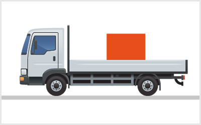
- 269. Szabályosan van-e a rakfelületen elhelyezve a nagy súlyú rakomány az ábrán látható módon? #714429
- Igen, mert a rakomány az összes tengelyt közel egyformán terheli.
- Nem, mert intenzív fékezés esetén a rakomány a vezetőfülke irányába megcsúszhat.
- Igen, mert így a rakomány a hátsó tengelyt jobban terheli.
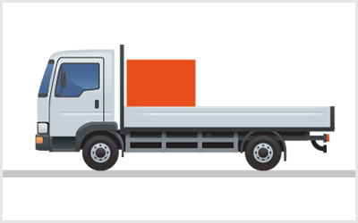
- 270. Szabályosan van-e a rakfelületen elhelyezve a nagy súlyú rakomány az ábrán látható módon? #714430
- Nem, mert a rakomány az első tengelyt jobban, a hajtott hátsó tengelyt kevésbé terheli.
- Igen, mert a rakomány intenzív fékezés esetén sem tud előre elmozdulni.
- Nem, mert intenzív gyorsítás esetén a rakomány hátrafelé elmozdulhat.
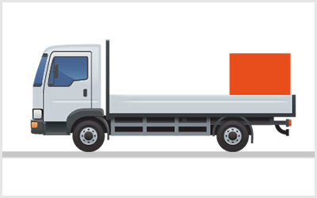
- 271. Szabályosan van-e a rakfelületen elhelyezve a nagy súlyú rakomány az ábrán látható módon? #714431
- Nem, mert a rakomány a hátsó tengelyt jobban, az első tengelyt kevésbé terheli.
- Nem, mert intenzív gyorsítás esetén a rakomány a hátfalon átbillenve leeshet.
- Igen, mert a rakomány így a hátsó tengelyt jobban terheli.
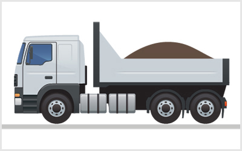
- 272. Helyes-e az ömlesztett áru ábrázolt módon történő elhelyezése a rakfelületen? #714432
- Igen, mert a rakomány az összes tengelyt közel egyformán terheli.
- Nem, mert intenzív fékezés esetén a rakomány a vezetőfülke irányába megcsúszhat.
- Igen, mert így a rakomány menet közben nem tud leszóródni a rakfelületről.
- 273. Hogyan változik a tehergépkocsi menetstabilitása, ha az ábrán látható módon helyezik el a rakományt? #714433
- Az első tengelyen a tapadás jelentős csökkenése, esetleg teljes megszűnése következhet be.
- Az első tengelyen a terhelés jelentős csökkenése a jármű könnyebb kormányzását teszi lehetővé.
- A hátsó tengelyen a tapadóerő megnő, ami pozitívan hat a jármű menetstabilitására.
- 274. Túlnyúlhat-e nyitott rakfelületű pótkocsiról hátrafelé a rakomány? #714434
- Igen, legfeljebb két méterre, de a rakfelület hosszának felénél nem nagyobb távolságra.
- Nem.
- Csak akkor, ha ez nem balesetveszélyes.
- 275. A pótkocsin a rakományt úgy kell elhelyezni, hogy... #714435
- a közlekedés biztonságát, valamint a személy- és vagyonbiztonságot ne veszélyeztesse.
- a vezetőt a szabad kilátásban csak kismértékben akadályozza.
- oldalirányba ne nyúljon túl a rakfelületen.
- 276. Tehergépkocsival pótkocsit vontat. A vonójármű rakfelületéről milyen mértékben nyúlhat hátra a rakomány? #714436
- A pótkocsit vontató jármű rakománya hátra nem nyúlhat túl a rakfelületen.
- Maximum két métert nyúlhat túl a rakfelületen.
- Maximum a rakfelület hosszának a felével nyúlhat túl a rakfelületen.
- 277. Rakodórámpához történő tolatásnál... #714437
- a rakodórámpa és a gépjármű között tartózkodni tilos.
- a biztonság érdekében tolatóradart kell alkalmazni.
- folyamatos hangjelzéssel kell a veszélyre a figyelmet felhívni.
- 278. Általában mennyire terhelhetők statikusan a kocsifalak? #720933
- A homlokfal a jármű megengedett hasznos terhelésének 40%-áig, az oldalfalak a 30%-áig terhelhetők.
- Az oldalfalak a jármű megengedett hasznos terhelésének 50%-áig, a homlokfal a 20%-áig terhelhető.
- Csak csekély mértékben, a jármű megengedett hasznos terhelésének 5-10%-áig.
- 279. Mit nevezünk gyűjtőrakománynak az alábbiak közül? #720947
- Amikor különféle csomagolt és csomagolatlan állapotú árut rakodnak egy járműre.
- Amikor az azonos csomagolású árut összegyűjtik.
- Amikor több darabból áll a rakomány.
- 280. Gépjárműre szerelt daru üzemeltetése során... #720977
- a felfüggesztett teher alatt és a gép mozgáskörzetében tartózkodni tilos.
- a rakodást fokozott óvatossággal és kellő körültekintéssel kell végrehajtani.
- a rakodási területet korláttal el kell határolni.
- 281. Hogyan segíti a terheléselosztási terv az áru rakfelületen történő biztonságos elhelyezését? #721013
- A terheléselosztási terv segítségével az áru tömegközéppontjának ismeretében meghatározható, hogy a járműnek megfelelő-e a teherbírása a rakomány elszállításához.
- A terheléselosztási terv segítségével megakadályozható az áru rakfelületen történő indokolatlan túlnyúlása.
- A terheléselosztási terv segítségével megakadályozható, hogy az áru tömegközéppontja az oldalfal fölé essen.
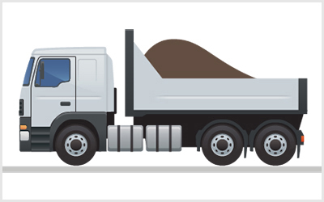
- 282. Helyes-e az ömlesztett áru ábrázolt módon történő elhelyezése a rakfelületen? #721029
- Nem, mert a rakomány ilyen módon történő elhelyezése veszélyezteti a menetstabilitást.
- Igen, mert a rakomány intenzív fékezés esetén sem tud előre elmozdulni.
- Nem, mert intenzív fékezés esetén a rakomány a vezetőfülkére szóródhat.
Járművek terhelhetősége (1 db., 1 pont)
- 283. Milyen mértékig szabad a járművet megterhelni? #703031
- Annyira, hogy a jármű össztömege a megengedett legnagyobb össztömegét ne haladja meg.
- Annyira, hogy a jármű össztömege ne haladja meg a 40 tonnát.
- Annyira, hogy a rakomány tömege ne haladja meg a jármű saját tömegét.
- Annyira, hogy a rakomány tömege ne haladja meg a jármű saját tömegének kétszeresét.
- 284. Hová kerüljön a rakomány súlypontja? #703032
- A jármű hossztengelyébe, minél alacsonyabbra, közel a rakfelülethez.
- Lehetőleg a hajtott tengely fölé, minél magasabbra.
- A hátsó tengely fölé, hogy a jármű kormányzása minél könyebb legyen.
- 285. Milyen problémát okozhat fékezéskor, ha a helytelen rakodás miatt a kerekek terhelése nem egyforma? #703033
- A kevésbé terhelt kerék megcsúszik, a jármű megpördülhet vagy erőteljesen félrehúz.
- A terheltebb kerék gumiabroncsa nagyobb mértékben kopik.
- A rakomány elmozdulhat.
- 286. Az olyan 10 tonnát meghaladó megengedett legnagyobb össztömegű tehergépjárművel, amelyet ömlesztett áruval raktak meg,... #703088
- jármű-tömegbizonylattal vehet csak részt a forgalomban.
- útvonalengedéllyel vehet csak részt a forgalomban.
- korlátozás nélkül részt vehet a közúti forgalomban.
- 287. A tehergépkocsi teherbírása... #703091
- megengedett legnagyobb össztömegének és saját tömegének a különbözete.
- megengedett legnagyobb össztömegének és tényleges össztömegének a különbözete.
- megengedett legnagyobb össztömegének és a szállított személyek 75 kg testtömeggel figyelembe vett tömegének a különbözete.
- 288. Tehergépkocsival pótkocsit vontat. Milyen mértékben terhelheti meg a pótkocsit? #703107
- A tehergépkocsi hatósági engedélyében foglaltak figyelembevétele mellett a pótkocsi össztömege nem haladhatja meg a tehergépkocsi össztömegének az 1,4-szeresét.
- A pótkocsi össztömege nem haladhatja meg a tehergépkocsi össztömegét.
- A pótkocsi össztömege nem haladhatja meg a tehergépkocsi össztömegének a felét.
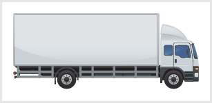
- 289. Mekkora az ábrán látható tehergépjármű legnagyobb megengedett össztömege, ha az a külföldi forgalomban is részt vesz? #703199
- 18 tonna.
- 20 tonna.
- 22 tonna.
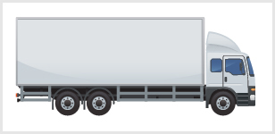
- 290. Mekkora az ábrán látható tehergépjármű legnagyobb megengedett össztömege, ha az útkímélő tengelycsoporttal rendelkezik? #703200
- 26 tonna.
- 25 tonna.
- 24 tonna.
- 291. Mekkora az ábrán látható tehergépjármű legnagyobb megengedett össztömege, ha az nem rendelkezik útkímélő tengelycsoporttal? #703201
- 25 tonna.
- 26 tonna.
- 24 tonna.
Rakományrögzítés követelményei (1 db., 1 pont)
- 292. Ha a 10%-ot meghaladó szögben előrefelé lejtő rakodófelületű szállítójárművön szállítanak kerekes járművet, akkor ... #703056
- a szállított kerekes jármű első és hátsó kerekeit egyaránt rögzíteni kell ékekkel és kikötözéssel.
- a szállítás irányát tekintve csak az első kerekeket kell ékekkel rögzíteni és kikötözni.
- a szállítás irányát tekintve csak a hátsó kerekeket kell ékekkel rögzíteni és kikötözni.
- 293. Szállítható-e a nem veszélyes folyadék mozgatható tartályban? #703057
- Igen.
- Nem.
- Csak külön engedéllyel.
- 294. A pótkocsin elhelyezett rakományt úgy kell rögzíteni, hogy... #703104
- el ne csússzék, le ne essék, ki ne ömöljék, továbbá olyan módon legyen lefedve (letakarva), hogy le ne szóródjék.
- hirtelen fékezés esetén is csak kismértékben tudjon elmozdulni.
- az oldalfalakat ívmenetben is csak kismértékben terheljék.
- 295. Nyitott rakfelületű járművel ömlesztett rakományt szállít. Hogyan biztosítja, hogy az áru ne essen le a rakfelületről? #703123
- Takaróhálóval vagy takaróponyvával kell a rakfelületen lévő árut betakarni.
- Az árudarabok egyedi rögzítésével.
- Oldalfal-magasítók alkalmazásával.
- 296. A rakománybiztosítás célja, hogy... #703124
- az áruk szállítása során egyaránt megvalósuljon a személyeknek, a berendezéseknek, az árunak és a környezetnek a védelme.
- a jármű rakfelületét és teherbírását optimálisan ki tudjuk használni.
- az áruk csomagolása megfeleljen biztonságos szállítás követelményeinek.
- 297. A 3,5 tonnánál nagyobb össztömegű tehergépjármű oldalfalainak... #703125
- ellen kell tudniuk állni a rakomány maximális megengedett súlyának 30%-ával egyenértékű oldalirányú erőhatásnak.
- ellen kell tudniuk állni a rakomány tényleges súlyának 30%-ával egyenértékű oldalirányú erőhatásnak.
- ellen kell tudniuk állni a rakomány maximális megengedett súlyának 40%-ával egyenértékű oldalirányú erőhatásnak.
- 298. Oldalponyvás felépítményű pótkocsin szállít árut. Hogyan kell rögzíteni ilyen esetben a rakományt? #703126
- Úgy kell rögzíteni, mintha lapos, nyitott rakfelületű járművön szállítanák őket, mert az oldalponyva nem alkalmas a rakomány visszatartására.
- Úgy kell rögzíteni, mintha oldalfalas rakfelületű járművön szállítanák őket.
- Nem kell rögzíteni, mert az oldalponyva önmagában alkalmas a rakomány visszatartására.
- 299. Darabáru szállítása során hogyan célszerű a rakományegységeket a jármű rakfelületén biztosítani? #703127
- Az egymással összezáródó alakzatok lehetőségeit ki kell használni, egyidejűleg a csúszásgátló szőnyegek, ill. betétek igénybevételével az elmozdulás elleni biztonságot lehet fokozni.
- A résmentes áruilleszkedés érdekében csak a változtatható rakodótér-behatárolás alkalmazható.
- A biztonságos áruszállítás érdekében lekötöző segédeszközöket kell használni.
- 300. Elégséges-e a legfeljebb 10%-os lejtésű rakodófelületű szállítójárművön történő kerekes jármű szállításakor, ha a rakomány első kerekét ékekkel rögzítették? #714451
- Nem, mert lekötözés is szükséges.
- Nem, mert a hátsó kerekeket is rögzíteni kell ékekkel.
- Igen, ha ez legalább 2 db ékkel történt.
- 301. Hogyan kell a vízszintes rakodófelületen szállított kerekes jármű szállítása közben alkalmazott kerékrögzítő ékeket a felépítményhez rögzíteni? #714452
- Beakasztással vagy kötőelemmel.
- Csúszásgátló felület alkalmazásával.
- Csak oldhatatlan rögzítéssel.
- 302. Ha a 10%-ot meghaladó szögben hátrafelé lejtő rakodófelületű szállítójárművön szállítanak kerekes járművet, akkor ... #714453
- a szállítás irányát tekintve legalább az első kerekeket kell ékekkel rögzíteni és kikötözni.
- a szállítás irányát tekintve legalább a hátsó kerekeket kell ékekkel rögzíteni és kikötözni.
- a szállított kerekes jármű első és hátsó kerekeit egyaránt rögzíteni kell ékekkel és kikötözéssel.
- 303. A szállított gáz ... #714454
- sűrített, folyékony halmazállapotú vagy nyomás alatt tartott lehet.
- csak sűrített vagy nyomás alatt tartott lehet.
- csak folyékony halmazállapotú vagy nyomás alatt tartott lehet.
- 304. Hatással van-e a rakomány és a rakfelület anyagát jellemző súrlódási tényező a rakomány biztosítására? #714456
- Igen, minél nagyobb a súrlódási tényező, annál jobban járul hozzá a súrlódási erő a rakomány rögzítéséhez.
- A súrlódási tényező nagysága leszorításos lekötözésnél nem befolyásolja a szükséges lekötések számára.
- Igen, minél kisebb a súrlódási tényező, annál jobban járul hozzá a súrlódási erő a rakomány rögzítéséhez.
- 305. Hogyan alakítja ki az alakzárásos rögzítési módot? #721012
- Alakzárásos rögzítési mód esetén a rakomány egymással, a felépítmény egyes részeivel (homlok- vagy oldalfalak), zárgerendákkal vagy biztosítófákkal történő rögzítését alkalmazzuk.
- Alakzárásos rögzítési mód esetén egységrakományokkal zárjuk le a részben rakott rakfelületet.
- Alakzárásos rögzítési mód esetén a rakomány tömegközéppontja az alakzár felső széle alatt kell, hogy legyen.
Rakományrögzítő eszközök (1 db., 1 pont)
- 306. Általában milyen kötözőeszközt használnak az átkötésre? #703050
- Általában műanyag vagy acélpántokat használnak.
- Általában kendersodrony kötözőszereket használnak.
- Csak acélpántokat használnak.
- 307. Általában milyen rakományrögzítési módra használják a rögzítőláncot? #703051
- Általában közvetlen kikötözésre.
- Általában hurkos kötözésre.
- Általában átkötözésre.
- 308. Milyen tulajdonságok határozzák meg egy rögzítőlánc teherbírását? #703052
- A láncszemek vastagsága és a felhasznált acél minősége.
- A láncszemek nagysága és a lánc hosszúsága.
- A láncszemek hajlítási sugara és a felhasznált acél kopásállósága.
- 309. Alkalmasak-e a nejlonkötelek rakományrögzítésre? #703053
- Nem, mert terhelés hatására megnyúlnak.
- Igen, mert nagy a szakítószilárdságuk.
- Igen, mert széles felhasználási köre van.
- 310. Az alábbiak közül mi az előnyük a csúszásgátló anyagoknak a rakományrögzítés tekintetében? #703054
- Csökkenthető a szükséges kötözésmennyiség.
- Zajtalanabb a szállítás.
- Gyorsabb a rakodás.
- 311. Milyen szerepet töltenek be a rakszerek az áruk szállítása során? #703128
- A rakszerek rakodási segédeszközök, amelyeket a fuvarozás tartama alatt az áruk rögzítésére vagy védelmére használnak.
- A rakszerek az áruk rakodását elősegítő speciális megfogószerkezetek, így csak a rakodás során alkalmazzuk őket.
- A rakszerek az egységrakományok stabilitásának növelését szolgáló segédeszközök.
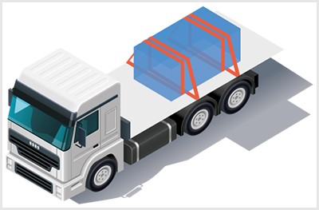
- 312. Milyen rakományrögzítési módot szemléltet az ábra? #703129
- Hurkos kötözést.
- Hurkos kötözést torlaszolásos rögzítéssel kombinálva.
- Leszorításos kötözést.
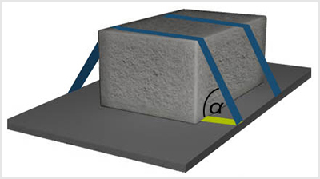
- 313. Milyen rakományrögzítési módot szemléltet az ábra? #703130
- Keresztirányú támasztási módot.
- Küszöbös torlaszolási módot.
- Sortorlaszolási módot.
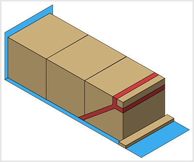
- 314. Milyen rakományrögzítési módot szemléltet az ábra? #703131
- Ferde kötözési módot, a rakomány alapjánál hátrafelé alkalmazott torlaszolásos rögzítéssel kiegészítve.
- Hurkos kötözést torlaszolásos rögzítéssel kombinálva.
- Leszorításos kötözési módot.
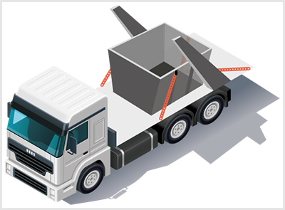
- 315. Milyen rakományrögzítési módot szemléltet az ábra? #703197
- Közvetlen kikötözést.
- Rögzítőláncos rögzítési módot.
- Megfogószerkezetes rögzítést.
- 316. Hogyan tudja megvédeni az árut rögzítő hevedert, ha a rakomány sarkai élesek? #707546
- Élvédők alkalmazásával, ennek hiányában a több rétegben összehajtott kemény papír is kellő védelmet biztosít.
- A rakomány olyan helyein vezeti a hevedert, ahol várhatóan a legkisebb károsodást okozzák.
- A rakomány sarkainak lekerekítésével.
- 317. Az alábbiak közül mely hibák esetén kell kicserélni a rögzítőláncot? #707547
- 3%-nál nagyobb mértékű nyúlás esetén.
- A normál átmérő 5%-át meghaladó kopás esetén.
- Felületi karcosodás esetén.
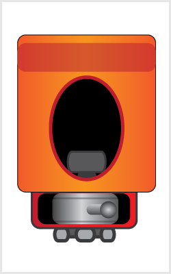
- 318. Milyen rögzítéshez használjuk az ábrán látható eszközt? #707549
- Megfogószerkezetes rögzítéshez.
- Rögzítőláncos rögzítéshez.
- Közvetlen kikötözéshez.
- Hurkos kötözéshez.
- 319. Milyen irányú visszatartó hatása van a hurkos kötözésnek a rakomány elmozdulására? #707550
- Oldalirányú visszatartó hatása van.
- Hosszirányú visszatartó hatása van.
- Hosszirányú és oldalirányú visszatartó hatása van.
- 320. Használható-e egyetlen részből álló drót rakományok kötözésre? #707551
- Nem.
- Igen.
- Csak ha megfelelő vastagságú és acélból készült.
- 321. Mit jelez a rögzítőheveder adattábláján olvasható LC érték? #720906
- A szakítószilárdságot.
- A maximális feszítőerőt.
- A maximális húzóerőt.
- 322. Mitől függ – többek között –, hogy a hurkos kötözés képes-e elviselni a rakományrögzítésnél szükséges mértékű húzóerőt? #720934
- A hevederrögzítési pontok teherbírásától.
- A hurkos kötözésnél alkalmazott csomózási módtól.
- A rakomány alakjától.
- 323. Megakadályozza-e a rakomány hosszirányú elmozdulását a hurkos kötözés? #720935
- Csak akkor, ha a hurkos kötözést torlaszolásos rögzítéssel egészítették ki.
- Csak akkor, ha a rakomány szögletes alakú.
- Igen.
- 324. Mi a célja a ferde kötözési rakományrögzítésnek? #720936
- Annak biztosítása, hogy a rakomány ne billenhessen fel és csúszhasson el.
- Annak biztosítása, hogy a járművön kihasználható legyen minden rögzítési pont.
- Az, hogy legyen lehetőség minden oldalfalhoz rögzíteni a rakományt.
- 325. Mikor lehet alkalmazni a közvetlen kikötözéses rakományrögzítést? #720937
- Akkor, ha a rakomány fel van szerelve hevederrögzítő szemekkel, melyeknek teherbírása megfelel a kötözőeszköz szakítószilárdságának.
- Akkor, ha a rakományt csak rövid távon szállítják.
- Akkor, ha nincs megfelelő hosszúságú kötözőeszköz a rakomány hurkos kötözésére.
- 326. Milyen mértékegységben tüntetik fel az azonosító címkéken a kötözőeszközök szakítószilárdságát? #720938
- Dekanewtonban (dkN).
- Newtonban (N).
- Kilogrammban (kg).
- 327. Mennyi az engedélyezett maximális előfeszítési erő a kötözőeszközök esetében? #720939
- A szakítószilárdság (LC) 50%-a 50 dkN kézerő mellett.
- A szakítószilárdság (LC) 20%-a 50 dkN kézerő mellett.
- A szakítószilárdság (LC) 10%-a 50 dkN kézerő mellett.
- 328. Milyen kritériumoknak kell megfelelniük a járművön lévő rögzítőpontoknak? #720943
- Nem lehet rajtuk mechanikai sérülés, és tisztán kell őket tartani.
- Nem lehetnek csavarozott rögzítésűek.
- Minden esetben vázszerkezetbe süllyesztett kivitelűnek kell lenniük.
- 329. Miért nem használhatóak rakománystabilizálásra a négyzet keresztmetszetű, fából készült talpak? #720944
- Mert használat közben elfordulhatnak a hossztengelyük mentén.
- Mert így nem megfelelő a keresztmetszeti szilárdságuk.
- Mert gazdaságtalan az elkészítésük.
- 330. Milyen rakományrögzítési mód a közvetlen megtámasztás? #721014
- A közvetlen megtámasztás a rakománynak a rakfelület oldalaihoz történő támasztását jelenti.
- A közvetlen megtámasztás a rakománynak a jármű megfelelő pontjaihoz történő rögzítését jelenti.
- A közvetlen megtámasztás a koszorúképzésre alkalmas rakomány, illetőleg támasztó eszközök felhasználásával történik.
- 331. A rögzítő heveder adattábla etikettjén olvasható LC érték milyen információt ad a gépkocsivezető részére? #721015
- Az LC érték az a maximális erő, amellyel a hevedert meg szabad terhelni használat közben.
- Az LC érték az a névleges feszítőerő, amely a heveder megfeszítése után a rugalmas anyagú hevederben ’maradó’ feszítőerő nagysága.
- Az LC érték a hevederre jellemző névleges húzóerő nagysága.
- 332. Hogyan lehet a gépkocsin elhelyezett rakomány rögzítésére használt kötözőhevedert megfeszíteni? #721016
- A megfeszítéséhez csak az adott hevederhez rendszeresített feszítőszerkezet használható.
- A heveder megfeszítéséhez szükséges erőkifejtés érdekében hosszabbító rúd is alkalmazható.
- A hevedert kézi erővel, segédeszközök alkalmazása nélkül kell megfeszíteni.
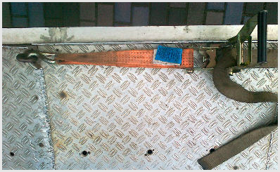
- 333. Hogyan kell elhelyezni a gépkocsin az ábrán látható hevederrögzítő szemet? #721017
- Párokban, egymással szemben kell elhelyezni a hosszú oldalak mentén, egymástól 0,7–1,2 méter távolságban.
- A rakfelületen úgy kell elhelyezni, hogy a rakomány átlós lekötését lehetővé tegyék.
- Bárhol elhelyezhető, ha a szilárdsága megfelel az előírásoknak.
- 334. Hogyan használható rakományrögzítésre a rakományhatároló-végzáró rúd? #721018
- A részlegesen megrakott járművek esetében a rakomány hátulról történő rögzítésére, hosszirányú elmozdulásának megakadályozására szolgál.
- Az oldalponyvás vagy ponyvás/léckeretes felépítmény nyitható oldalfalainak a megerősítésére szolgál.
- A rakfelületet csak részben betöltő, magas rakományok megtámasztására szolgál.
- 335. Az ábrán látható leszorításos lekötözés esetén mekkora lehet az α szög értéke? #721019
- A leghatékonyabb a leszorítás, ha a heveder és a rakfelület 75-90 fokos szöget zár be.
- A leghatékonyabb a leszorítás, ha a heveder és a rakfelület 45-75 fokos szöget zár be.
- Az α szög értéke 45 foknál kisebb nem lehet.
- 336. Milyen elemekből áll az acél kötözőlánc? #721020
- Egy vagy két részből áll, amit kiegészítő elemekkel - láncfeszítővel, láncrövidítővel, a láncvégeken horgokkal és gyűrűkkel - látnak el.
- Csak egy részből állhat, amit kiegészítő elemekkel - láncfeszítővel, láncrövidítővel, a láncvégeken horgokkal és gyűrűkkel - látnak el.
- Csak egy részből állhat, amit kiegészítő elemként láncfeszítővel látnak el.
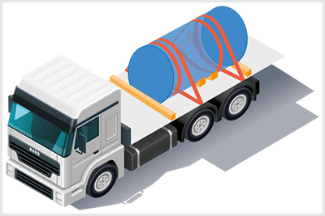
- 337. Milyen rakományrögzítési módot szemléltet az ábra? #721021
- Hurkos kötözést, a rakomány alapjánál alkalmazott torlaszolásos rögzítéssel és ékeléssel kombinálva.
- Hurkos kötözési módot.
- Torlaszolásos rögzítési módot ékeléssel kombinálva.
- 338. Mikor alkalmazható hatékonyan a torlaszolásos rögzítési mód? #721022
- Csak akkor, ha a csomagok szorosan illeszkednek mind a szállítójármű torlaszoló elemeihez, mind pedig egymáshoz.
- Csak akkor, ha a rakományok között megfelelő távolság van a párnázóanyag elhelyezéséhez.
- Csak akkor, ha a rakomány az oldal- és végfalak közötti teret hézagmentesen kitölti.
- 339. Milyen anyagok használhatók fel párnázóanyagként torlaszolásos rögzítéshez? #721023
- Átlós és keresztirányú rögzítőfák, támasztófák, légzsákok és rakodólapok egyaránt felhasználhatók.
- Elsősorban légzsákok, de szükség esetén a több rétegben összehajtott hullámpapír lemezek is felhasználhatók.
- Rögzítőfák, támasztófák, légzsákok egyaránt felhasználhatók.
- 340. Milyen sajátosságokat kell figyelembe venni bálák és nagyméretű zsákok rakfelületen történő rögzítése esetén? #721025
- Az ilyen rakományok nem merev falúak, formájuk változhat, így a biztonságos szállítás érdekében torlaszoló anyagokkal ki kell támasztani őket.
- Alakváltozásra hajlamosak, így a szállítóteret könnyen kitöltik, külön megtámasztást nem igényelnek.
- Alakváltozásra hajlamosak, így nem lehetséges leszorításos kötözési módot alkalmazni.
- 341. Az akasztott rakományokat úgy kell elhelyezni, hogy... #721026
- a jármű belsejében ne lenghessenek vagy mozdulhassanak el olyan mértékben, ami a menetstabilitást már veszélyezteti.
- a jármű fékezése, gyorsítása és kanyarodása során egymáshoz ne ütődhessenek.
- hézagmentesen kitöltsék a rakodóteret, megakadályozva ezzel a veszélyes lengéseket.
Egységrakomány-képzés (1 db., 1 pont)
- 342. A felsoroltak közül melyik az egységrakomány-képző eszköz? #703180
- Rakodólap.
- Rakonca.
- Kocsifalak.
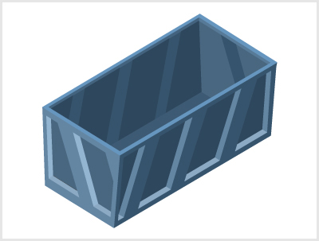
- 343. Milyen rakományok szállításánál használják a képen látható eszközt? #703181
- Egységrakomány.
- Ömlesztett áruk.
- Bálák.
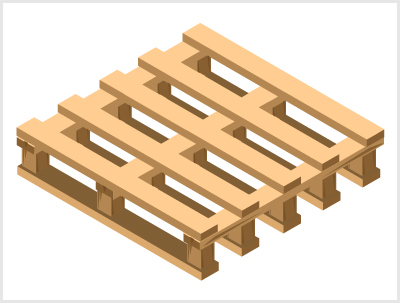
- 344. Milyen rakományok szállításánál használják a képen látható eszközt? #703182
- Egységrakomány.
- Ömlesztett áruk.
- Bálák.
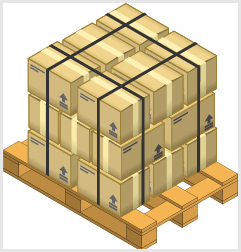
- 345. Hogyan nevezzük az ábrán látható egységrakomány-rögzítést? #703184
- Pántolásos rögzítés.
- Kötözéses rögzítés.
- Élvédős rögzítés.
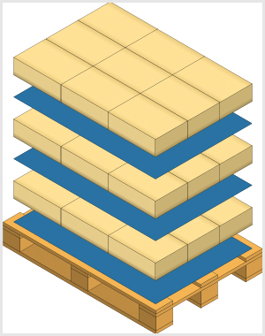
- 346. Milyen célt szolgálnak az ábrán látható, áruk közé helyezett eszközök? #703185
- A súrlódást, tapadást növelik.
- Az áruk elválasztását teszik lehetővé.
- Az áruk közötti szigetelést növelik.
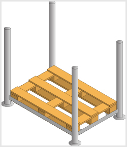
- 347. Hogyan nevezik a képen látható egységrakomány-képző eszközt? #703186
- Támasztókaros (rakoncás) rakodólap
- Támasztó rácskeretes rakodólap
- Hálós rakodólap
- 348. Miért szükséges a sík rakodólapon képzett egységrakományokat a rakodólaphoz rögzíteni? #714363
- Azért, mert a rakomány egyes elemei a szállítás során elcsúszhatnak, ledőlhetnek.
- Azért, mert így a rakodás során egy egységként lehet kezelni.
- Azért, hogy a szállítás során csökkenthető legyen a dézsmálás veszélye.
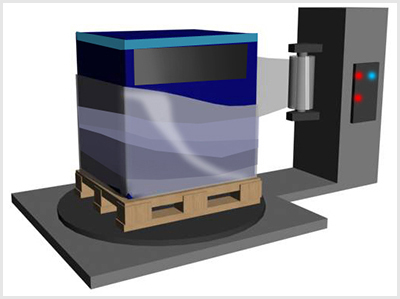
- 349. Milyen egységrakomány-rögzítési módszert lát az ábrán? #714364
- Nyújtható fóliás egységrakomány-rögzítési módszert.
- Zsugorfóliás egységrakomány-rögzítési módszert.
- Kombinált egységrakomány-rögzítési módszert.
- 350. Az egységrakomány-képző eszközök segítségével... #714365
- a kisebb méretű és tömegű árukat nagyobb méretű és tömegű, rakodógéppel kezelhető egységekké fogják össze.
- jelentős mértékben csökkenthető a szállítás során bekövetkezett árukár.
- olyan árukból képezhetünk nagyobb szállítási egységet, amelyek szabványos méretűek.
- 351. Felhasználható-e sérült, törött paletta egységrakomány kialakítására? #714366
- Nem, mert nem biztosítja a rajta elhelyezett áru biztonságos rögzítését, ami árukárhoz vezethet.
- Csak abban az esetben, ha az áru palettán történő rögzítése zsugor- vagy nyújtható fóliázással történik.
- Igen, ha a sérülést a rajta elhelyezett áru takarja.
- 352. Szállítás közben meg lehet-e bontani a gépkocsin elhelyezett, átpántolt fémlemezcsomagot annak érdekében, hogy az árut különböző helyeken rakják le? #714367
- Csak akkor, ha a megbontás helyén rendelkezésre állnak a feltételek a maradék rakomány biztonságos rögzítéséhez.
- Igen, korlátozás nélkül megtehető.
- Nem bontható meg, mert ez veszélyezteti a jármű biztonságos továbbközlekedését.
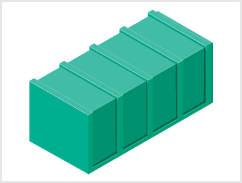
- 353. Milyen rakományok szállításánál használják az ábrán látható szállítóládát? #714368
- Egységrakomány.
- Ömlesztett áruk.
- Bálák.
- 354. Milyen áruk esetében használják az ábrán látható, áruk közé helyezett csúszásgátlókat? #714369
- Leginkább papír vagy műanyag alapú csomagolásnál használják.
- Leginkább fa alapú csomagolásnál használják.
- Leginkább kemény csomagolások elválasztására használják.
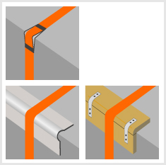
- 355. Mire szolgálnak az ábrán látható élvédők? #714370
- A kötözőerő elosztására és a végek lekötésére.
- A rögzítőerő megkétszerezésére.
- A kötözőerő koncentráltabbá tételére és a végek lekötésére.
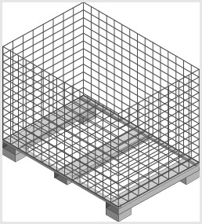
- 356. Hogyan nevezik a képen látható egységrakomány-képző eszközt? #714371
- Hálós rakodólap
- Támasztókaros (rakoncás) rakodólap
- Támasztó rácskeretes rakodólap
- 357. Hogyan nevezik a képen látható egységrakomány-képző eszközt? #714372
- Tartályos rakodólap
- Tömör falú, keretes rakodólap
- Támasztókaros (rakoncás) rakodólap
- 358. Mekkora az ábrán látható, szabványos egységrakomány-képző eszköz teherbírása egyedileg? #720898
- 1000 kg.
- 800 kg.
- 500 kg.
- 359. Mekkora az ábrán látható, szabványos egységrakomány-képző eszköz teherbírása halmazban? #720899
- 4000 kg.
- 2000 kg.
- 1500 kg.
- 360. Mi szolgáltatja a képen látható rögzítőeszköz rögzítő erejét? #720901
- A rögzítő erőt a fóliában fellépő feszültség szolgáltatja.
- A rögzítő erőt a fólia tapadása szolgáltatja.
- A rögzítő erőt a fóliázógép szolgáltatja.
- 361. Hogyan nevezik a képen látható egységrakomány-képző eszközt? #720902
- Támasztó rácskeretes rakodólap
- Támasztókaros (rakoncás) rakodólap
- Hálós rakodólap
- 362. Hogyan nevezik a képen látható egységrakomány-képző eszközt? #720903
- Tömör falú, keretes rakodólap
- Támasztókaros (rakoncás) rakodólap
- Tartályos rakodólap
- 363. Milyen rögzítési módokat alkalmaztak a rakodólapokon elhelyezett áru összefogására? #721024
- Hevederes(1), műanyag fóliás(2) és hálós(3) rögzítési módokat.
- Pántolásos(1), műanyag fóliás(2) és lekötéses(3) rögzítési módokat.
- Lekötéses(1), műanyag fóliás(2) és pántolásos(3) rögzítési módokat.
- 364. Áruszállítást végző gépkocsi rakodásánál mire kell feltétlenül tekintettel lenni, ha gyűjtő-terítő feladatot végez? #721027
- Az áruk tulajdonságaira, az egyberakhatóság feltételeire, a le- és felrakás tervezett sorrendjére és a lerakást elősegítő egységképzési módokra.
- Csak a fel- és lerakodás tervezett sorrendjére.
- Arra, hogy megfelelő rakodási segédeszközök álljanak a gépkocsivezető rendelkezésére.
Rakománycsoportok rakodása (1 db., 1 pont)
- 365. Helyes-e a nehezebb és könnyebb árudarabok ábrázolt módon történő elhelyezése a rakfelületen? #703085
- Nem, mert a rakomány a hátsó tengelyt jobban, az első tengelyt kevésbé terheli.
- Igen, mert így nem tud a rakomány elmozdulni.
- Igen, mert intenzív fékezés esetén a nehezebb rakományt a homlokfal megtámasztja.
- 366. Helyes-e a nehezebb és könnyebb árudarabok ábrázolt módon történő elhelyezése a rakfelületen? #703086
- Nem, mert a rakomány a hátsó tengelyt jobban, az első tengelyt kevésbé terheli.
- Igen, mert így a hátsó tengely terhelése megfelelő lesz.
- Igen, mert intenzív fékezés esetén a nehezebb rakomány a vezetőfülke irányába nem tud megcsúszni.
- 367. Élőállat-szállítás során a közúti járműnek... #703108
- az állatok be- és kirakodásához megfelelő felszerelést kell tartalmazniuk.
- a tisztítását és fertőtlenítését hetente végre kell hajtani.
- a raktere nem lehet többszintes.
- 368. Táblaüveg szállítása során hogyan célszerű a rakfelületet kialakítani? #703133
- A felépítményeken hosszirányban ’A’ alakú kereteket kell kialakítani, amelyek mindkét oldala a padlózat alsó vázszerkezetébe van építve, és két külső és két belső rekeszt alkotnak.
- Az oldalfalakat lánccal össze kell kötni, hogy a táblaüveg fokozott terhelését el tudják viselni.
- Csúszásgátló anyaggal kell a padozatot lefedni a fekve szállított üvegtáblák megcsúszásának megakadályozására.
- 369. Nagy átmérőjű kábeldobokat kell szállítania. Hogyan kell azt a rakfelületen elhelyezni a biztonságos szállítás érdekében? #703135
- Méretüket figyelembe véve hossz- vagy keresztirányban felállítva, ékágyra helyezve, minden irányban hurkos kötéssel rögzítve.
- Csak palettán elhelyezve szállíthatók, a palettákra vonatkozó szabályok figyelembevételével.
- Lehetőség szerint fektetve kell szállítani az elgurulás megakadályozása érdekében.
- 370. A tehergépjármű oldalfalának lenyitásakor hová kell állnia az azt végző személyeknek? #703211
- Az oldalfal két végéhez.
- Az oldalfal közepéhez.
- Az egyik személynek az oldalfal végéhez, a másik személynek pedig hozzávetőleg a közepéhez.
- 371. Tartózkodhat-e bárki a képen látható rakodás közben a jármű vezetőfülkéjében? #703215
- Nem, mert az balesetveszélyes.
- Igen, de csak a járművezető.
- Igen, a járművezető és a kísérőszemély.
- 372. Hogyan kell lenyitni a tehergépkocsi rakfelületének oldalfalát? #714439
- Két személy az oldalfalat a két végén fogva – a biztosítás kioldása és az oldalkapcsok megnyitása után – óvatosan leengedi.
- Egy személy az oldalfal megnyitása után az oldalfalat egyik végén fogva, óvatosan leengedi.
- Egy személy az oldalfal megnyitása után, az oldalfalat középen fogva leengedi.
- 373. Élőállat-szállító utánfutóval lovat szállít. Szükséges-e a gépkocsivezetőnek ehhez érvényes képesítési bizonyítvánnyal rendelkeznie? #714440
- Nem szükséges, ha a kiindulási helytől a rendeltetési helyig 65 km-t nem meghaladó szállítást végez.
- Minden esetben szükséges.
- Csak akkor szükséges, ha nem utazik vele együtt szakképzett kísérő.
- 374. Csak hatósági vagy jogosult állatorvos felügyelete mellett szabad kirakni az élőállatokat, ha... #714441
- útközben megbetegedés, sürgősségi vágás vagy megnövekedett mértékű elhullás történt.
- a szállítás időtartama meghaladta a nyolc órát.
- szállítás közben a jármű közlekedési baleset részese volt.
- 375. Csöveket, fagerendákat, üreges profilokat a gépkocsin úgy kell elhelyezni, hogy... #714442
- a teher súlypontja a rakodófelület hossztengelyébe essen, a rakomány lehetőség szerint hézagmentesen a homlokfalnak támaszkodjon.
- a teher súlypontja a rakodófelület hossztengelyében essen, a rakomány és a homlokfal között legalább 1 m csúszási teret kell hagyni.
- a teher súlypontja a talajhoz minél közelebb essen, a rakomány és a homlokfal közötti teret pedig ki kell párnázni.
- 376. Táblaüveg szállítása esetén hol kell elkezdeni a rakodást a rakodófelületen? #714443
- A homlokfalnál.
- Bármely oldalfalnál.
- A hátfalnál.
- 377. Tartózkodhat-e bárki a képen látható gépi rakodás közben a jármű vezetőfülkéjében? #714444
- Nem, mert az balesetveszélyes.
- Igen, de csak a járművezető.
- Igen, a járművezető és a kísérőszemély.
- 378. Legalább hány személynek kell végeznie a tehergépjármű oldalfalának lenyitását és felcsukását a balesetek elkerülése érdekében? #720909
- Legalább két személynek.
- Legalább három személynek.
- Egy személy elegendő.
- 379. A kerekes járművek szállítása tekintetében a szállító járművön való oldalirányú elmozdulásra vonatkozó követelményeket akkor lehet teljesítettnek tekinteni, ha ... #720945
- a szállítójármű rakodófelületén kialakított csatornák pereme legalább 5 cm magas.
- a szállítójármű rakodófelülete bordázott kivitelű.
- a szállítójármű rakodófelülete nem szélesebb, mint egy szállítandó kerekes jármű.
- 380. Állatszállításra használt gépkocsit, az ahhoz tartozó felszerelési tárgyakkal együtt... #721004
- minden szállítás után a tisztítani és fertőtleníteni kell.
- egyéb szállítási feladatra nem lehet igénybe venni.
- sérült vagy beteg állatok szállítása után tisztítani és fertőtleníteni kell.
Rakománycsoportok rögzítése (1 db., 1 pont)
- 381. Rakományrögzítés tekintetében hogyan kell a kerekes járműveket szállításuk során biztosítani? #703055
- Lehetőleg a kötözéses és a torlaszolásos rögzítés kombinációjával.
- Lehetőleg hurkos kötözéssel.
- Lehetőleg ferde kötözéssel.
- 382. Hogyan szállíthatóak általában a nehéz fémlemez tekercsek? #703063
- Általában ékágyon rögzítve.
- Általában fektetve és egymásra torlaszolva.
- Általában kikötözéssel rögzítve.
- 383. Gyűjtőrakományok szállítása esetén... #703132
- az rakomány összetétele a fel- és lerakási pontokon változik, így a gépkocsivezetőnek a rakományelhelyezés és rögzítés során ezt fokozottan figyelembe kell venni.
- az áruk rakfelületen történő elhelyezése során a rakodási alapelveket csak részben kell betartani.
- az áruk jellegétől függetlenül a rakodóteret mindig a homlokfaltól kezdve kell feltölteni.
- 384. Egy 11 tonna megengedett legnagyobb össztömegű tehergépkocsival ömlesztett árut szállít. Milyen feltételekkel teheti ezt? #703137
- Az ilyen jármű közlekedéséhez az áru elszóródását megakadályozó takaróponyva mellett jármű-tömegbizonylat is szükséges.
- Külön feltételek nincsenek meghatározva.
- Csak az elszóródás megakadályozására kell figyelmet fordítani.
- Az így megrakott járművel főútvonalon csak 40 km/h sebességgel szabad közlekedni.
- 385. Hogyan kell szállítani az olajozott lapos lemezeket? #703163
- Csak egybekötötten szállíthatóak.
- Csak egyesével szállíthatóak.
- Csak állítva szállíthatóak.
- 386. Helyes-e az ábrán látható rögzítési mód, ha a rakodófelület a szállítójármű elejének irányába 10 fokot meghaladó szögben lejt? #703207
- Nem, mert mind az első, mind a hátsó pár kereket le kell kötözni.
- Nem, mert két-két éket kell helyezni az első pár kerék elé és a hátsó pár kerék elé is.
- Nem, mert a hátsó pár kereket kell lekötözni, nem pedig az első párat.
- 387. Helyes-e az ábrán látható rögzítési mód, ha a rakodófelület hátrafelé 10 fokot meghaladó szögben lejt? #703208
- Igen.
- Nem, mert két-két éket kell helyezni az első pár kerék elé és a hátsó pár kerék elé is.
- Nem, mert a hátsó pár kereket kell lekötözni, nem pedig az első párat.
- 388. Melyik eszköz gondoskodik az ábrán látható esetben hátrafelé a rakomány megtámasztásáról? #703209
- Az 1-es számú támasztófa.
- A 3-as számú alátét.
- A 2-es számú átkötés.
- 389. Hogyan kell szállítani az építkezésekhez felhasználásra kerülő nagyméretű, előre gyártott falblokkokat, tetőlemezeket? #703210
- Közel függőleges helyzetben.
- Közel vízszintes helyzetben.
- Fektetve.
- Csak 90 fokos, teljesen függőleges helyzetben.
- 390. Szállítható-e táblaüveg olyan szállítójárművön, amelyen az üvegszállító rekesz csak csúszásgátló alátéttel kapcsolódik a rakodófelülethez? #714445
- Nem, mert a rekesznek megfelelően rögzítettnek kell lennie a rakodófelülethez.
- Igen, mert az üveg súlya biztosítja a rekesz megfelelő stabilitását.
- Igen, ha a csúszásgátló többrétegű.
- 391. Alkalmazható-e járművek rakfelületen történő szállítása esetén hevederes vagy láncos rögzítési mód? #714446
- Igen, de csak akkor, ha a szállító jármű rendelkezik megfelelő számú, elhelyezésű és teherbírású kötözési ponttal, és a kerekeket ékkel kitámasztották.
- Igen, de ha a szállított jármű tényleges össztömege meghaladja a 3500 kg-ot, csak lánccal lehet rögzíteni.
- Nem, mert járművek rakfelületen történő szállítása esetén speciális rögzítési módot kell alkalmazni.
- 392. Helyes-e az ábrán látható rögzítési mód, ha a rakodófelület vízszintes? #714447
- Nem, mert a menetirány szerint elől levő pár kereket le is kell kötözni.
- Nem, mert a hátsó kerekeket is ki kell ékelni legalább hátulról.
- Nem, mert a hátsó kerekeket is ki kell ékelni legalább elölről.
- 393. Helyes-e az ábrán látható rögzítési mód, ha a rakodófelület a szállítójármű elejének irányába 10 fokot meghaladó szögben lejt? #714448
- Nem, mert mind az első, mind a hátsó pár kereket le kell kötözni.
- Nem, mert két-két éket kell helyezni az első pár kerék elé és a hátsó pár kerék elé is.
- Nem, mert a hátsó pár kereket kell lekötözni, nem pedig az első párat.
- 394. Milyen gépjárművel szabad táblaüveget szállítani? #720907
- Amelyiknek rakodófelületéhez rögzíthető az üvegszállító láda vagy rekesz.
- Amelyiknek oldalfalai 50 cm-nél magasabbak, így az üvegszállító láda nem tud kiborulni.
- Zárt raktérrel rendelkező gépjárművel.
- 395. Élő állat szállítása esetén a szállítóeszközöket és felszereléseiket oly módon kell kialakítani, hogy... #720973
- megakadályozzák az állatok sérülését, valamint biztosítsák az állatok védelmét.
- az állatok részére a szabad mozgás biztosítva legyen.
- az állatok egymástól elválaszthatóak legyenek.
Veszélyes áruk szállítására vonatkozó előírások (1 db., 1 pont)
- 396. Kedvezményezett (korlátozott) mennyiségű veszélyes áru szállítása esetén... #703064
- a járművet nem kell veszélyt jelző táblákkal megjelölni.
- a járművet szám nélküli veszélyt jelző táblákkal kell megjelölni.
- a járművet számozott veszélyt jelző táblákkal kell megjelölni.
- 397. Veszélyes anyagot szállító járművek esetében mi tekinthető rendkívüli veszélynek? #703076
- Ha az anyag szabaddá vált, vagy szabaddá válásának lehetősége fennáll.
- Ha több, veszélyes anyagot szállító gépjármű közlekedik ugyanazon az útszakaszon.
- Ha a veszélyes anyagot szállító jármű lakott területen közlekedik.
- 398. Melyik oldalra kell a sérülteket menteni veszélyes anyag szállítása során bekövetkezett rendkívüli esemény során? #703080
- Lehetőleg a széllel szembeni, ’A’ oldalra.
- Lehetőleg a szélárnyékos, ’B’ oldalra.
- 399. Miről ismerhető fel a veszélyes anyagot tartalmazó küldeménydarab? #703092
- A küldeménydarabon elhelyezett veszélyességi bárcáról.
- A küldeménydarabon elhelyezett kezelési bárcáról.
- A csomagolás anyagáról.
- 400. Mely anyagokat tekintjük a közlekedésben veszélyesnek? #703166
- Azokat az anyagokat, amelyek fizikai és kémiai tulajdonságuk, esetleg szállítás közbeni állapotuk miatt a szállítás során veszélyt jelentenek.
- Azokat a késztermékeket, amelyek fizikai és kémiai tulajdonságuk, esetleg szállítás közbeni állapotuk miatt a szállítás során veszélyt jelentenek.
- Azokat az alapanyagokat, amelyek fizikai és kémiai tulajdonságuk, esetleg szállítás közbeni állapotuk miatt a szállítás során veszélyt jelentenek.
- Azokat a tárgyakat, amelyek fizikai és kémiai tulajdonságuk, esetleg szállítás közbeni állapotuk miatt a szállítás során veszélyt jelentenek.
- 401. Ha a képen látható tehergépjármű balesetet szenved, kit kell azonnal értesítenie? #703168
- A rendőrhatóságot.
- A tűzoltóságot.
- A mentőket.
- 402. Felbonthatja-e gépkocsivezetőként a veszélyességi bárcával jelölt küldeménydarabot? #714357
- Nem, mert azzal a saját és mások egészségét is veszélyezteti.
- Igen, ha biztos vagyok benne, hogy azzal a saját és mások egészségét nem veszélyezteti.
- Igen, baleset esetén.
- 403. Szállítható-e veszélyes anyag megsérült csomagolásban? #714358
- Nem.
- Igen.
- Igen, ha a gépkocsivezető nem ítéli súlyosnak a csomagolás sérülését.
- 404. Veszélyes anyag szállítása során bekövetkezett rendkívüli esemény esetén a sérülteket a veszélyes zónán kívül, ... #714359
- a széllel szembeni oldalon kell elhelyezni.
- a szélárnyékos oldalon kell elhelyezni.
- kell elhelyezni.
- 405. Mi a teendője gépkocsivezetőként, ha a szállítandó áru az ADR hatálya alá tartozik, és Ön nem rendelkezik a veszélyes áruk szállítására vonatkozó, érvényes ADR vizsgával? #714497
- Megtagadom a fuvart.
- Elszállítom az árut.
- Nyilatkozatot kérek a feladótól arról, hogy az áru közúton szállítható.
- 406. Veszélyes anyagot szállító járműből mérgező gáz áramlik ki. A jármű melyik oldalára kell a sérülteket kimenekíteni? #720922
- A széllel szembeni ’A’ oldalra.
- A szélárnyékos ’B’ oldalra.
- Közvetlenül az álló jármű mögé.
- 407. Veszélyes anyagot szállító járműből mérgező gáz áramlik ki. A jármű melyik oldalára kell a sérülteket kimenekíteni? #720923
- A széllel szembeni ’A’ oldalra.
- Közvetlenül az álló jármű elé.
- Az ’A’ és a ’B’ oldalra egyaránt végrehajtható a mentés.
Veszélyes árut szállító járművek jelölése (1 db., 1 pont)
- 408. Milyen jelöléssel van megjelölve a közúton veszélyes anyagot szállító jármű? #703066
- Veszélyt jelző táblákkal és bárcákkal.
- Piros zászlóval.
- Halálfejes fekete lobogóval.
- 409. Milyen kezelést igényel az ábrán látható bárcával jelölt küldeménydarab? #703073
- Törékeny, óvatosan kell kezelni.
- Nem szabad buktatni.
- Óvni kell a nedvességtől.
- A küldeménydarab szállítása esetén gondoskodni kell a megfelelő páratartalomról.
- 410. Mire figyelmeztet, ha járművét ezzel a táblával jelölték meg? #703083
- Arra, hogy a járművel az ADR hatálya alá tartozó veszélyes anyagot szállít.
- Arra, hogy a szállított veszélyes anyag a környezetet nem szennyezi.
- Arra, hogy előzőleg veszélyes anyagot szállító, de jelenleg üres, tisztítatlan járművet vezet.
- 411. Milyen kezelést igényel az ábrán látható bárcával jelölt küldeménydarab? #714499
- Csak állítva szállítható.
- Óvatosan kell kezelni, mert törékeny (egymásra rakni tilos).
- Óvni kell a nedvességtől.
- A küldeménydarabokat szorosan kell egymás mellé helyezni.
- 412. Mire figyelmeztet a veszélyes anyagot tartalmazó küldeménydarabon látható alábbi kezelési bárca? #714500
- A küldeménydarab törékeny, ennek megfelelően kell szállítani.
- A küldeménydarabot nem szabad billenteni.
- A küldeménydarabot nedvességtől védeni kell.
- 413. Mire figyelmeztet a veszélyes anyagot tartalmazó küldeménydarabon látható alábbi kezelési bárca? #714501
- A küldeménydarabot csak állítva lehet szállítani.
- A küldeménydarabot csak kis mértékben szabad billenteni.
- A küldeménydarabot nedvességtől védeni kell.
- 414. Mi a teendője gépkocsivezetőként, ha a megrakott szállítójármű, melynek vezetésével megbízták, az ábrán látható táblával van megjelölve, és Ön nem rendelkezik érvényes ADR vizsgával? #714502
- A szállítást megtagadom.
- Elszállítom az árut.
- Nyilatkozatot kérek a feladótól arról, hogy az áru közúton szállítható.
- 415. Hogyan kell kezelnie az ábrával megjelölt árudarabot? #714503
- Nedvességtől óvni kell.
- Az árudarabra más áru nem helyezhető.
- Az árudarab semmilyen különleges kezelési módot nem igényel.
- 416. Mit jelez a szállítási csomagon elhelyezett ábra? #714504
- A szállítási csomag súlypontját.
- A szállítási csomag középpontját.
- A szállítási csomagot az ábrával megjelölt oldallal lefelé kell szállítani.
- A szállítási csomagot az ábrával megjelölt oldallal felfelé kell szállítani.